СТРОИТЕЛЬНЫЕ НОРМЫ И ПРАВИЛА
ЗДАНИЯ И СООРУЖЕНИЯ НА ПОДРАБАТЫВАЕМЫХ ТЕРРИТОРИЯХ И ПРОСАДОЧНЫХ ГРУНТАХ
СНиП 2.01.09-91
МОСКВА 1992
РАЗРАБОТАНЫ НИИСК Госстроя СССР (д-р техн. наук С. Н. Клепиков - руководитель темы: канд. техн. наук Г. М. Григорьев - руководитель темы; канд. техн. наук А И. Кисиль; канд. техн. наук И. А. Розенфельд), ВНИМИ Минуглепрома СССР (канд. техн. наук Р. А. Муллер: канд. техн. наук В. Н. Земисев; канд. техн. наук Г. А. Решетов), Донецким ПромстройНИИпроектом Минстроя УССР (канд. техн. наук А. А. Петраков; канд. техн. наук Ю. Л. Бучинский), КиевЗНИИЭП Госкомархитектуры (канд. техн. наук В. Б. Шевелев, ВНИИОСП Госстроя СССР (канд. техн. наук Ю. А. Багдасаров) с участием ИПКОН АН СССР, Донбассгражданпроекта Госстроя УССР, НИИПградостроительства Госкомархитектуры.
ВНЕСЕНЫ НИИСК Госстроя СССР.
С введением в действие СНиП 2.01.09-91 «Здания и сооружения на подрабатываемых территориях и просадочных грунтах» утрачивает силу глава СНиП II-8-78 «Здания и сооружения на подрабатываемых территориях».
ПОДГОТОВЛЕНЫ К УТВЕРЖДЕНИЮ Главтехнормированием Госстроя СССР (канд. техн. наук Ф. В. Бобров).
Наименования организаций в настоящем документе приведены по состоянию на 5 сентября 1991 г.
При пользовании нормативным документом следует учитывать утвержденные изменения строительных норм и правил и государственных стандартов.
СОДЕРЖАНИЕ
|
Госстрой СССР |
Строительные нормы и правила |
СНиП 2.01.09-91 |
|
Здания и сооружения на подрабатываемых территориях и просадочных грунтах |
Взамен |
Настоящие нормы распространяются на проектирование зданий и сооружений, возводимых на подрабатываемых территориях и просадочных грунтах.
Требования настоящих норм не распространяются на проектирование зданий и сооружений, возводимых на подрабатываемых территориях калийных месторождений, на площадках, для которых деформации основания от подработки не могут быть определены, на подрабатываемых территориях и просадочных грунтах в сейсмических районах, а также на проектирование гидротехнических сооружений.
1. ОБЩИЕ ПОЛОЖЕНИЯ
1.1. При проектировании зданий и сооружений, возводимых на территориях залегания полезных ископаемых, необходимо соблюдать требования ст. 34 «Основ законодательства Союза ССР и союзных республик о недрах».
1.2. При проектировании зданий и сооружений для строительства на подрабатываемых территориях и просадочных грунтах следует предусматривать:
планировочные мероприятия;
конструктивные меры защиты зданий и сооружений;
мероприятия, снижающие неравномерную осадку и устраняющие крены зданий и сооружений с применением различных методов их выравнивания;
горные меры защиты, предусматривающие порядок горных работ, снижающий деформации земной поверхности;
инженерную подготовку строительных площадок, снижающую неравномерность деформаций основания;
водозащитные мероприятия на территориях, сложенных просадочными грунтами;
ликвидацию (тампонаж, закладку и т.п.) пустот старых горных выработок, находящихся на глубине до 80 м, выявленных в процессе изыскательских работ;
мероприятия, обеспечивающие нормальную эксплуатацию наружных и внутренних инженерных сетей, лифтов и другого инженерного и технологического оборудования в период проявления неравномерных деформаций основания.
Выполнение указанных мер защиты не исключает возможности появления в несущих и ограждающих конструкциях допускаемых по условиям эксплуатации деформаций и трещин, устранимых при проведении ремонта.
1.3. Проекты зданий и сооружений, разработанные для обычных условий строительства, не допускается применять для строительства на подрабатываемых территориях и просадочных грунтах без проверки расчетом и переработки их, при необходимости, в соответствии с требованиями настоящих норм.
Типовые проекты зданий и сооружений, возводимых на подрабатываемых территориях, должны быть унифицированы в целях обеспечения возможности их применения на подрабатываемых территориях различных групп и на просадочных грунтах с I и II типами грунтовых условий, а также в других условиях строительства (неоднородных, набухающих, заторфованных, илистых, аллювиальных, насыпных грунтах).
1.4. Здания и сооружения с новыми или усовершенствованными конструктивными решениями, методами выравнивания и способами подготовки оснований на подрабатываемых территориях и просадочных грунтах допускается применять в массовом строительстве только после получения положительных результатов экспериментальной проверки в натурных условиях.
1.5. Проектами зданий и сооружений в случаях, устанавливаемых проектной организацией, следует предусматривать выполнение работ, связанных с инструментальными наблюдениями за деформациями земной поверхности, а также зданиями и сооружениями, включая, при необходимости, и период их строительства.
1.6. К проекту здания или сооружения следует прилагать специальный паспорт, в котором необходимо привести:
во всех случаях - краткое описание конструктивной схемы; указания об инструментальных наблюдениях за деформациями здания или сооружения и земной поверхности (п. 1.5); данные о результатах инструментальных наблюдений при сдаче здания или сооружения в эксплуатацию; данные о предусматриваемых мерах защиты, осуществляемых в период строительства и эксплуатации; указания о способах выравнивания здания или сооружения;
для подрабатываемых территорий - описание мер защиты; данные о величинах деформаций земной поверхности и физико-механических характеристиках грунтов основания;
|
Внесены |
Утверждены |
Срок |
для просадочных грунтов - схему застройки микрорайона или квартала с нанесением водонесущих сетей (водопровода, канализации, теплотрасс) и указанием расположения запорных устройств на водоводах для отключения отдельных трасс или их участков при аварии; план расположения неподвижных реперов, используемых при наблюдениях за осадками зданий и сооружений.
Паспорта должны постоянно находиться в эксплуатирующей и проектной организациях.
1.7. В состав проектной документации на строительство зданий и сооружений на подрабатываемых территориях и просадочных грунтах следует включать раздел «Техническая эксплуатация зданий» (ТЭ), предусматривающий предупреждение в период срока службы здания нарушений его эксплуатационной пригодности, а также обеспечение бесперебойной работы инженерного оборудования.
Раздел ТЭ должен содержать указания: о приемке в эксплуатацию законченного строительством здания; о проведении систематических осмотров несущих и ограждающих конструкций, а в отдельных случаях (при длительном сроке эксплуатации объекта или неоднократной его подработке) осмотров вскрытых основных узлов и сварных соединений конструкций; о систематическом контроле за состоянием водонесущих внутренних и наружных сетей и водосодержащих сооружений; о наблюдениях за влажностью грунтов основания в помещениях с мокрыми технологическими процессами в местах вводов и выпусков коммуникаций на просадочных грунтах; о выполнении, в случае необходимости, работ по выравниванию здания и его ремонту.
2. ИСХОДНЫЕ ДАННЫЕ ДЛЯ ПРОЕКТИРОВАНИЯ ЗДАНИЙ И СООРУЖЕНИЙ НА ПОДРАБАТЫВАЕМЫХ ТЕРРИТОРИЯХ И ПРОСАДОЧНЫХ ГРУНТАХ
ПОДРАБАТЫВАЕМЫЕ ТЕРРИТОРИИ
2.1. Воздействиями от подработки, учитываемыми при проектировании зданий и сооружений, являются сдвижения и деформации земной поверхности, которые подразделяются на следующие виды (черт. 1):
оседание h, мм;
наклон i, мм/м;
кривизна (выпуклости, вогнутости) r, 1 /км, или радиус кривизны R = 1/r, км;
горизонтальное сдвижение x, мм;
относительная горизонтальная деформация растяжения или сжатия e, мм/м;
уступ высотой h, см.
При диагональном расположении здания или сооружения относительно линии простирания пласта дополнительно следует учитывать воздействия от подработки в виде деформаций земной поверхности:
скручивание S, 1/км;
скашивание g, мм/м.
В случаях, предусмотренных проектом, учитывается скорость нарастания деформаций земной поверхности n мм/м, мес.
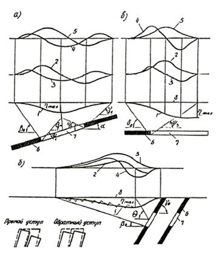
Черт. 1. Виды сдвижений и деформаций земной поверхности
а - вертикальный разрез вкрест простирания при наклонном залегании угольных пластов; б - то же, при крутом залегании угольных пластов; в - вертикальный разрез по простиранию пластов; 1 - кривые оседаний; 2 - эпюры наклонов; 3 - эпюры кривизны; 4 - эпюры относительных горизонтальных деформаций; 5 - эпюры горизонтальных сдвижений; 6 - пласт; 7 - очистная выработка; 8 - положение земной поверхности до подработки; hmax - максимальное оседание земной поверхности; b0, g0, d0 - граничные углы сдвижения; y1, y2, y3 - углы полных сдвижений; q - угол максимального оседания; a - угол падения пласта
2.2. В качестве исходных данных при проектировании зданий и сооружений на подрабатываемых территориях следует принимать максимальные ожидаемые (при имеющихся календарных планах развития горных работ) или вероятные (при отсутствии календарных планов горных работ) величины сдвижений и деформаций земной поверхности на участке строительства в направлении вкрест и по простиранию пластов.
При погоризонтной и панельной подготовках шахтного поля (пологое залегание) все намеченные к разработке пласты разделяют на две группы:
пласты, разрабатываемые в первые 20 лет после начала эксплуатации объектов;
пласты, разрабатываемые после 20 лет с момента начала эксплуатации объектов.
От каждой группы пластов рассчитывают ожидаемые (вероятные) деформации; в качестве исходных данных для проектирования принимают максимальные ожидаемые (вероятные) деформации земной поверхности.
В тех случаях, когда под участком строительства горные работы планируются в сроки более, чем через 20 лет после начала эксплуатации объектов, то в качестве исходных данных для проектирования принимают вероятные деформации земной поверхности, полученные от влияния всех намеченных к разработке пластов, уменьшенные на одну группу территорий до среднего значения в соответствующей группе.
При этажной подготовке шахтного поля (наклонном или крутом залегании) в качестве исходных данных для проектирования принимают максимальные деформации земной поверхности, определяемые с учетом выполнения горных работ по горизонтам от всех влияющих пластов в течение всего срока эксплуатации зданий и сооружений.
Во всех случаях при прогнозе деформаций поверхности необходимо учитывать планируемые особенности подготовки и развития горных работ в свите пластов, способы управления горным давлением, число одновременно разрабатываемых пластов и наличие целиков у крупных нарушений, а также у технических границ шахтных полей.
2.3. Ожидаемые (вероятные) деформации земной поверхности должны рассчитывать горные инженеры-маркшейдеры по методикам, разработанным институтами, специализирующимися в этой области.
Деформации земной поверхности для неизученных месторождений и для районов с особо сложными горногеологическими условиями подработки (п. 4.26) должны рассчитывать институты, специализирующиеся в этой области.
2.4. Подрабатываемые территории следует подразделять на группы в зависимости от значений деформаций земной поверхности в соответствии с табл. 1.
Таблица 1
|
Деформации земной поверхности подрабатываемых территорий |
|||
|
относительная горизонтальная деформация e, мм/м |
наклон i, мм/м |
радиус кривизны R, км |
|
|
I |
12 ³ e > 8 |
20 ³ i > 10 |
1 £ R < 3 |
|
II |
8 ³ e > 5 |
10 ³ i > 7 |
3 £ R < 7 |
|
III |
5 ³ e > 3 |
7 ³ i > 5 |
7 £ R < 12 |
|
IV |
3 ³ e > 0 |
5 ³ i > 0 |
12 £ R < 20 |
Подрабатываемые территории, на которых при выемке пластов полезного ископаемого образуются уступы земной поверхности, следует подразделять на группы в соответствии с табл. 2.
Таблица 2
|
Iк |
IIк |
IIIк |
IVк |
|
|
Высота уступа h, см |
25 ³ h > 15 |
15 ³ h > 10 |
10 ³ h > 5 |
5 ³ h > 0 |
2.5. Расчетные значения деформаций земной поверхности, учитываемые при расчете зданий и сооружений как факторы нагрузки, следует определять умножением ожидаемых (вероятных) значений деформаций земной поверхности на соответствующие коэффициенты n, принимаемые по табл.3.
Таблица 3
|
Коэффициент n |
|||
|
обозначение |
для расчета деформаций и сдвижений |
||
|
ожидаемых |
вероятных |
||
|
Оседание h |
nh |
1,2 (0,9) |
1,1 (0,9) |
|
Горизонтальное сдвижение x |
nx |
1,2 (0,9) |
1,1 (0,9) |
|
Наклон i |
ni |
1,4 (0,8) |
1,2 (0,8) |
|
Относительная горизонтальная деформация растяжения или сжатия e |
ne |
1,4 (0,8) |
1,2 (0,8) |
|
Кривизна r |
nr |
1,8 (0,6) |
1,4 (0,6) |
|
Уступ h |
nh |
1,4 (0,8) |
1,2 (0,8) |
|
Скручивание s |
ns |
1,8 |
1,4 |
|
Скашивание g |
ng |
1,4 |
1,2 |
|
Примечание. Коэффициенты n меньше единицы следует учитывать при расчете зданий и сооружений на одновременное действие максимальных деформаций земной поверхности двух видов и более, в том случае, когда уменьшение значения деформаций какого-либо вида может ухудшить условия работы конструкций. |
|||
2.6. При расчете зданий и сооружений на воздействия деформаций земной поверхности необходимо вводить соответствующие коэффициенты условий работы m, принимаемые при выполнении горных работ на глубине до 500 м по табл. 4, на глубине более 500 м - равными единице.
Таблица 4
|
Коэффициенты условий работы m |
||||
|
обозначение |
при длине здания (сооружения) l, м |
|||
|
до 15 |
15-30 |
св. 30 |
||
|
Относительная горизонтальная e |
me |
1,0 |
0,8 |
0,7 |
|
Наклон i |
mi |
1,0 |
0,8 |
0,7 |
|
Кривизна r |
mr |
1,0 |
0,7 |
0,5 |
|
Скручивание s |
ms |
1,0 |
0,7 |
0,5 |
|
Скашивание g |
m |
1,0 |
0,8 |
0,7 |
|
Примечания: 1. При рассмотрении поперечного сечении здания (сооружения) за l следует принимать его ширину. 2. Для круглого в плане здания (сооружения) за l следует принимать его внешний диаметр. 3. Для здания (сооружения) башенного типа при l < 15 м следует принимать mi = 1,5. 4. Для подкрановых путей мостовых кранов, имеющих длину 60 м, следует принимать mi = 0,5. |
||||
ТЕРРИТОРИИ С ПРОСАДОЧНЫМИ ГРУНТАМИ
2.7. При проектировании зданий и сооружений, возводимых на просадочных грунтах, необходимо учитывать следующие виды деформаций (черт. 2):
просадку грунта ssl как от собственного веса ssl,g, так и от внешней нагрузки ssl,p;
горизонтальные перемещения земной поверхности usl;
относительные горизонтальные деформации растяжения или сжатия e;
наклон земной поверхности isl.
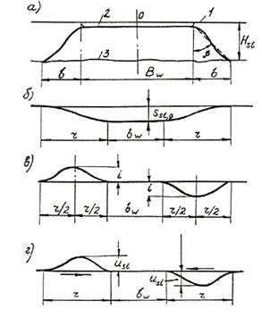
Черт. 2. Характер развития деформаций земной поверхности в пределах просадочной воронки
а - поперечный разрез зоны увлажнения; б - кривая просадки поверхности грунта; в - кривые наклонов поверхности; г - кривые горизонтальных перемещений поверхности грунта; 1 - положение земной поверхности; 2 - площадь замачивания; 3 - нижняя граница растекания воды; b - ширина зоны растекания воды; Bw - ширина замачиваемой площади; b - угол растекания воды; Hsl - просадочная толща; r - расчетная длина криволинейного участка просадки грунта от собственного веса; bw - ширина горизонтального участка просадки; sslg - просадка грунта от собственного веса; i - наклон земной поверхности; usl - горизонтальные перемещения земной поверхности
2.8. Исходные данные для выбора инженерных решений, а также состава и объема защитных мероприятий при проектировании зданий и сооружений на просадочных грунтах должны включать:
материалы инженерно-геологических и гидрогеологических изысканий на площадке строительства; проектные решения здания или сооружения;
генплан участка строительства;
ситуационный план района строительства;
проект вертикальной планировки застраиваемой территории;
схемы водонесущих коммуникаций;
сведения о способах подготовки оснований, применяемые в районе строительства;
данные о деформациях здания (сооружения) в районе застройки.
2.9. В зависимости от ожидаемых деформаций земной поверхности территории на просадочных грунтах подразделяются на группы по условиям строительства в соответствии с табл. 5 для грунтовых условий I типа и с табл. 6 - для грунтовых условий II типа.
Таблица 5
|
Просадочность основания от внешней нагрузки |
Деформации основания |
||
|
просадка от внешней нагрузки ssl,p |
относительная разность просадок от внешней нагрузки isl,p = Dssl,p/L |
||
|
I |
Не устранена |
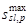 |
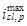 |
|
II |
Устранена частично |
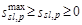 |
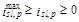 |
|
III |
Устранена полностью |
ssl,p = 0 |
isl,p = 0 |
|
Обозначение, принятое в таблице: L - расстояние между фундаментами здания (сооружения). |
|||
Таблица 6
|
Деформации земной поверхности, мм/м |
Показатель, мм/м К = ssl,p/r |
||
|
относительная горизонтальная e |
наклон i |
||
|
0 |
e > 12 |
i > 18 |
K > 11 |
|
I |
12 ³ e > 8 |
18 ³ i > 13,5 |
11 ³ K > 9 |
|
II |
8 ³ e > 5 |
13,5 ³ i > 10 |
9 ³ K > 6 |
|
III |
5 ³ e > 3 |
10 ³ i > 7,5 |
6 ³ K > 4 |
|
IV |
3 ³ e > 0 |
7,5 ³ i > 0 |
4 ³ K > 0 |
|
Обозначение, принятое в таблице: r - расчетная длина криволинейного участка просадки грунта от собственного веса. |
|||
3. ПЛАНИРОВКА И ЗАСТРОЙКА ТЕРРИТОРИЙ
ПОДРАБАТЫВАЕМЫЕ ТЕРРИТОРИИ
3.1. Застройка территорий залегания полезных ископаемых (кроме общераспространенных) допускается по согласованию с органами государственного горного надзора. При этом должны быть предусмотрены и осуществлены строительные и иные мероприятия, обеспечивающие возможность извлечения из недр полезных ископаемых.
Под застройку в первую очередь следует использовать территории, под которыми:
а) залегают непромышленные полезные ископаемые;
б) полезные ископаемые выработаны и процесс деформаций земной поверхности закончился;
в) подработка ожидается после окончания срока амортизации проектируемых объектов.
3.2. При выборе для застройки территорий с промышленными запасами полезных ископаемых целесообразность намечаемого строительства должна быть подтверждена расчетами сравнительной экономической эффективности возможных вариантов размещения зданий и сооружений с учетом затрат:
а) на мероприятия по защите зданий и сооружений от воздействий подработки и на расширение строительной производственной базы;
б) на ремонт зданий и сооружений;
в) на обеспечение бесперебойной работы оборудования;
г) в случае необходимости, связанных с корректировкой плана развития горных работ.
3.3. Картографический материал, необходимый для разработки проектов планировки и застройки городов и других населенных пунктов на подрабатываемых территориях, должен содержать:
а) выкопировку из топографического плана района застройки;
б) выкопировки из гипсометрических планов и геологических разрезов района застройки с указанием вынутых и планируемых к выемке запасов полезных ископаемых;
в) геологическую карту района застройки с указанием выходов под наносы пластов полезного ископаемого и тектонических нарушений и примыкающих к ним опасных зон, не подлежащих застройке.
На картографических материалах должны быть указаны:
а) участки, защищаемые предохранительными целиками;
б) устья старых вертикальных и наклонных выработок;
в) зоны образовавшихся и возможных провалов;
г) зоны возможных затоплений грунтовыми и паводковыми водами;
д) расположение ранее образовавшихся уступов в пределах площадки застройки и примыкающих к ней участков;
е) механические защитные и санитарные зоны от проектных границ породных отвалов шахт, не подлежащие застройке;
ж) контуры территорий различных групп по величинам деформаций земной поверхности или плана площадки застройки с изолиниями деформаций;
з) контуры площадей залегания балансовых и забалансовых запасов полезных ископаемых.
Примечание. Все картографические материалы целесообразно представлять в одном масштабе, но не мельче 1:5000, а для объектов большой протяженности - не мельче 1:10 000. В случае отсутствия материалов указанных масштабов допускается применять масштаб 1:25 000.
3.4. При разработке проектной документации в состав проектов детальной планировки и проектов застройки необходимо включать схемы горногеологических ограничений, выполненные в масштабе основных чертежей. На схемах должны быть указаны категории территорий по условиям строительства: пригодные, ограниченно пригодные, непригодные, временно непригодные для застройки жилых районов и микрорайонов.
Деление территорий на категории следует осуществлять согласно рекомендуемому приложению 9.
3.5. При планировке и застройке городов и населенных пунктов, включающих подрабатываемые территории с величинами деформаций большими, чем для III и IVк групп, следует предусматривать наиболее эффективное использование территорий, пригодных для застройки.
На площадках с различным сочетанием групп территорий, как правило, следует учитывать размещение функциональных зон и отдельных зданий (сооружений), строительство которых может быть обеспечено с применением строительных мер защиты.
Общественные здания переменной этажности, сложной конфигурации в плане, а также жилые здания высотой более 9 этажей следует располагать, в основном, на территориях 1-й и 2-й категорий по условиям строительства.
При планировке и застройке территорий 1-й и 2-й категорий допускается уменьшать суммарную площадь зеленых насаждений, но не более, чем на 30 %, соответственно повышая плотность населения при условии компенсации недостающего озеленения на прилегающих территориях с большими величинами деформаций земной поверхности.
Плотность населения на территории микрорайона следует принимать в соответствии со СНиП 2.07.01-89 «Градостроительство. Планировка и застройка городских и сельских поселений», рассматривая неподрабатываемые участки территорий 1-й категории как зоны высокой градостроительной ценности, подрабатываемые участки территорий 2-й категории, пригодные для застройки, - средней и подрабатываемые участки территорий 3-й категории, ограниченно пригодные для застройки, - низкой градостроительной ценности.
При застройке подрабатываемых участков территорий 2-й и 3-й категорий, пригодных или ограниченно пригодных для строительства, расположенных в центральной зоне города или вдоль основных архитектурно-планировочных осей, степень градостроительной ценности территории может быть принята высокой при соответствующем технико-экономическом обосновании.
3.6. Продольные оси бескаркасных зданий, проектируемых для строительства на площадках, где на земной поверхности не образуются уступы, следует ориентировать, как правило, по простиранию пластов. На площадках, где ожидается образование уступов, здания целесообразно размещать между уступами или же ориентировать их продольные оси вкрест простирания пластов. На участках выходов геологических нарушений продольные оси зданий следует ориентировать в направлении падения сместителей.
ТЕРРИТОРИИ С ПРОСАДОЧНЫМИ ГРУНТАМИ
3.7. Площадки, намеченные под строительство, предпочтительно располагать на участках с минимальной глубиной просадочных толщ, с деградированными просадочными грунтами, а также на участках, где просадочная толща подстилается малосжимаемыми грунтами, позволяющими применять фундаменты глубокого заложения, в том числе свайные.
3.8. Проекты планировки и застройки городов должны предусматривать максимальное сохранение естественных условий стока поверхностных вод. Размещение зданий и сооружений, затрудняющих отвод поверхностных вод, не допускается.
3.9. При рельефе местности в виде крутых склонов планировку застраиваемой территории следует осуществлять террасами. Отвод воды с террас следует производить как по кюветам, устроенным в основаниях откосов, так и по быстротокам.
3.10. Здания и сооружения с мокрыми технологическими процессами следует располагать в пониженных частях застраиваемой территории. На участках с высоким расположением уровня подземных вод, а также на участках с дренирующим слоем, подстилающим просадочную толщу, указанные здания и сооружения следует располагать на расстоянии от других зданий и сооружений, равном: не менее 1,5 толщины просадочного слоя в грунтовых условиях I типа по просадочности, а также II типа по просадочности при наличии водопроницаемых подстилающих грунтов; не менее 3-кратной толщины просадочного слоя в грунтовых условиях II типа по просадочности при наличии водонепроницаемых подстилающих грунтов.
Расстояния от постоянных источников замачивания до зданий и сооружений допускается не ограничивать при условии полного устранения просадочных свойств грунтов.
4. ПРИНЦИПЫ ПРОЕКТИРОВАНИЯ ЗДАНИЙ И СООРУЖЕНИЙ
ОБЩИЕ УКАЗАНИЯ
4.1. Здания и сооружения в зависимости от их назначения и условий работы следует проектировать по жесткой, податливой или комбинированной конструктивным схемам. Вид конструктивной схемы определяет характер и состав вводимых конструктивных мер защиты.
42. При проектировании по жесткой конструктивной схеме следует предусматривать исключение возможности взаимного перемещения отдельных элементов несущих конструкций при деформациях основания за счет:
разделения зданий и сооружений деформационными швами на отдельные отсеки;
усиления отдельных элементов несущих конструкций и связей между ними;
устройства в стенах железобетонных поэтажных поясов;
устройства горизонтальных дисков из железобетонных элементов перекрытия и покрытия;
устройства фундаментов зданий и сооружений в виде сплошных плит, перекрестных балок, балок-стенок и т. п.
При проектировании по податливой конструктивной схеме следует предусматривать возможность приспособления конструкций без появления в них дополнительных усилий к неравномерным деформациям земной поверхности за счет:
устройства в подземной части горизонтальных швов скольжения;
введения шарнирных и податливых связей между элементами несущих и ограждающих конструкций;
снижения жесткости несущих конструкций;
введения гибких вставок и компенсационных устройств;
увеличения зазоров между соседними конструкциями.
Указанные меры необходимо применять с таким расчетом, чтобы обеспечивались:
достаточная площадь опирания элементов конструкций при деформациях основания;
воздухо- и водонепроницаемость стыков между отдельными взаимоперемещающимися элементами конструкций;
устойчивость элементов конструкций при деформациях основания.
При проектировании по комбинированной конструктивной схеме следует предусматривать сочетание жесткой и податливой схем с применением различных конструктивных схем подземной и надземной частей зданий и сооружений.
4.3. Здания и сооружения сложной формы в плане разделяются деформационными швами на отсеки. Высоту зданий и сооружений в пределах отсека следует принимать одинаковой, а длину отсеков - по расчету в зависимости от расчетных величин деформаций земной поверхности, физико-механических свойств грунтов основания, принятой конструктивной схемы, технологических требований.
Деформационные швы между отсеками должны обеспечивать свободный наклон или поворот отсека при деформациях основания. Размер деформационного шва следует рассчитывать согласно указаниям п. 4.31 и п. 5 рекомендуемого приложения 1 в зависимости от высоты и длины отсека и особенностей грунтовых условий.
Деформационные швы должны разделять смежные отсеки зданий и сооружений по всей высоте, включая кровлю и фундаменты.
4.4. Фундаменты под несущие стены в зоне деформационных швов устраиваются, как правило, сплошными. В целях уменьшения ширины деформационного шва допускается применение прерывистых фундаментов.
Фундаменты под парные колонны у деформационных швов в каркасных зданиях, выполненных по рамно-связевой или связевой схеме, допускается не разделять, если фундаменты под остальные колонны конструктивно не связаны между собой в горизонтальном направлении плитами, связями-распорками и т. д. При наличии связей допускается устройство несимметричных парных фундаментов на общей бетонной (железобетонной) подушке с устройством шва скольжения.
4.5. В случаях, когда строительными мерами защиты и инженерной подготовкой основания не исключаются деформации конструкций и крены зданий (сооружений), превышающие допустимые нормами, здания и сооружения следует проектировать с учетом мероприятий, снижающих неравномерную их осадку и устраняющих их крены, в том числе с применением выравнивания.
Варианты защиты зданий и сооружений и мероприятия по их выравниванию следует принимать на основании технико-экономического сравнения.
4.6. Шахты лифтов следует проектировать с учетом наклонов, вызываемых деформациями земной поверхности.
В случаях, когда расчетные отклонения стен шахт от вертикальной плоскости превышают допустимые, установленные государственными общесоюзными стандартами, проектами следует предусматривать возможность регулирования положения лифтовой шахты.
4.7. Примыкающие к зданиям инженерные сооружения следует отделять от зданий деформационными швами согласно указаниям, приведенным в п. 4.31 и п. 5 рекомендуемого приложения 1.
4.8. Фундаменты под технологическое оборудование следует проектировать, предусматривая в зависимости от типа оборудования и технологических требований к его эксплуатации, применение специальных мер защиты, отдавая предпочтение выравниванию оборудования домкратами. Фундаменты в этом случае следует проектировать с учетом указаний п. 6 обязательного приложения 2.
ОСНОВНЫЕ ТРЕБОВАНИЯ К РАСЧЕТУ
4.9. Конструкции зданий и сооружений, проектируемых для строительства на подрабатываемых территориях и просадочных грунтах, следует рассчитывать в соответствии с ГОСТ 27751-88 по методу предельных состояний с учетом деформаций:
а) основания от подработки и просадки, проявляющихся в виде его вертикальных и горизонтальных перемещений;
б) грунтов от нагрузок, передаваемых сооружением.
При этом допускается учитывать изменение прочностных и деформационных характеристик грунтов основания при воздействии горизонтальных деформаций от подработки согласно рекомендуемому приложению 11.
4.10. Расчет конструкций на особые сочетания нагрузок, состоящие из постоянных, длительных, возможных кратковременных нагрузок и воздействий от подработки или просадки грунтов, следует производить на наиболее неблагоприятные сочетания воздействий (пп.4.11-4.13).
4.11. Возможными сочетаниями воздействий от подработки являются:
а) относительная горизонтальная деформация растяжения +e, кривизна выпуклости +r, наклон i;
б) горизонтальная деформация сжатия -e, кривизна вогнутости -r, наклон i;
в) уступ на земной поверхности (высота уступа h) и соответствующие ему горизонтальная деформация e и наклон i.
При плавных вертикальных деформациях земной поверхности (кривизне) следует учитывать сочетания деформаций, указанных в подпунктах «а», «б», при ступенчатых деформациях (уступе) - сочетание деформаций подпункта «в».
В случаях, оговоренных в п. 2.1, дополнительно следует учитывать деформации скручивания s и скашивания g.
4.12. Здания (сооружения), проектируемые для строительства в грунтовых условиях I типа по просадочности, следует рассчитывать при наиболее неблагоприятном изменении жесткости основания (согласно рекомендуемому приложению 10) при местном его замачивании:
а) в торце здания (сооружения);
б) под серединой здания (сооружения).
Здания и сооружения следует рассчитывать в условиях строительства (табл. 5):
I¢ группы - на максимальные неравномерные просадки от внешней нагрузки в верхней зоне просадки;
II¢ группы - на неравномерные просадки от внешней нагрузки в грунтовом слое с неустраненной просадочностью, а также на неравномерные осадки грунта с устраненной просадочностью;
III¢ группы - на неравномерные просадки грунта от внешней нагрузки при полном устранении его просадочных свойств.
4.13. Здания (сооружения), проектируемые для строительства в грунтовых условиях II типа по просадочности, следует рассчитывать согласно рекомендуемому приложению 10 при наиболее неблагоприятном расположении просадочной воронки по отношению к зданию (сооружению):
а) под серединой здания (сооружения) при L ³ 2r с кривизной вогнутости и относительными горизонтальными деформациями сжатия -e в средней части воронки и кривизной выпуклости и относительными горизонтальными деформациями растяжения +e на краях воронки;
б) под зданием (сооружением) при L < 2r + bw с кривизной вогнутости и относительными горизонтальными деформациями сжатия - e;
в) под торцом здания (сооружения) с кривизной выпуклости и относительными горизонтальными деформациями растяжения +e.
Примечание. При просадке грунта от собственного веса при ssl,g £ 0,3 м относительные горизонтальные деформации земной поверхности в расчетах конструкций допускается не учитывать.
4.14. Отдельные виды деформаций земной поверхности при расчете конструкций допускается не учитывать, если установлено, что усилия от таких видов деформаций достаточно малы по сравнению с усилиями от других видов нагрузок и воздействий.
4.15. Расчетные схемы деформирования основания, используемые для определения усилий, деформаций и ширины раскрытия трещин в конструкциях зданий (сооружений), возникающих вследствие неравномерных деформаций оснований, допускается принимать согласно рекомендуемому приложению 10.
4.16. При определении усилий в конструкциях от воздействий подработки (п.4.11) и просадки грунтов (пп. 4.12, 4.13) необходимо:
а) при наличии данных, согласно которым отдельные виды деформаций земной поверхности при подработке достигают своих максимальных значений, одновременно вызывая в конструкции усилия одного знака (усилия складываются), два усилия от этих видов деформаций суммировать по формуле (1) и три усилия - по формуле (2):
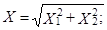
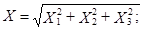
где Х1, Х2, Х3 - усилия от различных видов деформаций земной поверхности;
б) в качестве расчетного усилия принимать наиболее неблагоприятное для работы конструкций сочетание усилий, возникающих от каждого отдельного вида деформаций, если отдельные виды деформаций земной поверхности при подработке достигают своих максимальных значений в разное время;
в) на просадочных грунтах с просадкой от собственного веса при ssl,g > 0,3 м производить расчет на совместное воздействие вертикальных и горизонтальных перемещений, принимая при этом в качестве расчетных суммарные усилия, возникающие одновременно в конструкциях от вертикальных и горизонтальных перемещений;
г) на подрабатываемых территориях с основаниями, сложенными просадочными грунтами, усилия определять от воздействия подработки и просадки, принимая при этом наиболее неблагоприятные для работы конструкций усилия, возникающие от каждого вида воздействий.
4.17. Расчетные схемы сооружений, используемые для определения усилий и деформаций в их конструкциях, должны отражать с целесообразной степенью точности действительные условия работы сооружений и особенности их взаимодействия с основанием. В необходимых случаях они должны учитывать: пространственную работу, геометрическую и физическую нелинейность, а также ползучесть материалов конструкций.
Нелинейные факторы работы строительных конструкций необходимо учитывать комплексно: физическую и конструктивную нелинейность, переменный характер нагружения и др. Без достоверной оценки степени влияния отдельных факторов на величину усилий в конструкциях односторонний учет какого-либо одного фактора не допускается.
4.18. Конструкции следует рассчитывать на воздействия от подработки и просадки грунтов, исходя из условия совместной работы основания и сооружения.
В зависимости от значений контактных напряжений (нормальных и касательных на контакте основания с фундаментом) модель основания следует принимать в виде:
а) линейно-упругой системы;
б) нелинейно-неупругой системы, отражающей нелинейную связь между деформациями и нагрузками на основание в стабилизированном состоянии грунта, различие в деформационных свойствах основания при нагружении и разгрузке, нарушение контакта между фундаментом и основанием;
в) реологической системы, отражающей деформационные свойства основания для различных моментов времени в течение строительного и эксплуатационного периодов (в нестабилизированном состоянии грунта).
Модели основания для расчета следует выбирать с учетом конструктивных особенностей, назначения здания (сооружения) и указаний, приведенных в п. 4.19.
Деформационные свойства основания на контакте с фундаментами допускается определять одновременно с применением двух коэффициентов жесткости основания: при сжатии - С, при сдвиге - Д; либо одного из них.
Коэффициенты жесткости основания допускается определять в соответствии с рекомендуемым приложением 11.
4.19. Для выбора модели основания следует произвести расчет с использованием модели основания в виде линейно-упругой системы.
Если полученные в результате этого расчета значения нормальных р и касательных t напряжений на отдельных участках контакта основания с фундаментом удовлетворяют условиям:
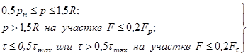
то расчет допускается производить с использованием линейно-упругой системы.
В формуле (3):
Рn - начальное нормальное давление на основание от сооружения, действующее до появления воздействий от подработки или просадки;
R - расчетное сопротивление грунта основания, определяемое согласно требованиям СНиП 2.02.01-83;
tmax - предельное значение касательного напряжения по подошве фундамента, определяемое согласно требованиям СНиП 2.02.01-83;
F - площадь контакта основания с фундаментом, на которой превышены напряжения р и t;
Fp, Ft - площади контакта основания с фундаментом, на которых проявляются соответственно нормальные и касательные напряжения.
Если условия (3) не удовлетворяются, то следует произвести расчет с использованием модели основания в виде нелинейно-неупругой системы.
4.20. Усилия, возникающие в несущих конструкциях зданий и сооружений от воздействий горизонтальных деформаций основания, следует определять в зависимости от конструктивных особенностей подземной части здания (сооружения), глубины заложения его фундамента, площади контакта с грунтом, физико-механических свойств грунтов основания, в том числе и изменения их в процессе подработки, действующих нагрузок с учетом:
а) сдвигающих сил по подошве фундаментов или сил трения по шву скольжения (см. п. 4.21 и табл. 7);
б) сдвигающих сил по боковым поверхностям фундаментов;
в) нормального давления сдвигающегося грунта на лобовые поверхности фундаментов.
4.21. Коэффициенты трения по шву скольжения допускается принимать в соответствии с табл. 7.
Таблица 7
|
Расход материала прослойки, кг/м2 |
Коэффициент трения по шву скольжения |
|
|
Два слоя пергамина с прослойкой молотого графита |
0,5 |
0,20 |
|
То же, щипаной слюды |
1,0 |
0,30 |
|
То же, инертной пыли |
1,0 |
0,40 |
|
Два слоя полиэтиленовой пленки с прослойкой графита |
0,4 |
0,15 |
|
Примечание. Плоскость шва скольжения должна быть выровнена. Отклонения размера шва по вертикали допускаются не более 5 мм на 1 м длины шва. |
||
4.22. При проектировании зданий и сооружений с учетом возможности их выравнивания в процессе эксплуатации с помощью домкратов следует выполнять расчет конструкций на воздействие неравномерных деформаций основания и в стадии выравнивания. Расчетом на выравнивание следует проверять несущую способность и устойчивость конструкций фундаментно-подвальной части зданий, воспринимающих сосредоточенную нагрузку от выравнивающих устройств, и глубину заложения фундаментов, включая проверку на устойчивость основания при передаче на него давления от выравнивающих устройств.
ОСОБЕННОСТИ ПРОЕКТИРОВАНИЯ ДЛЯ СТРОИТЕЛЬСТВА НА ПОДРАБАТЫВАЕМЫХ ТЕРРИТОРИЯХ
4.23. При величинах деформаций земной поверхности на подрабатываемых территориях: e £ 1 мм/м, R ³ 20 км, i £ 3 мм/м и h £ 1 см меры защиты зданий и сооружений, за исключением железобетонных емкостей для жидкостей и некоторых типов технологического оборудования, как правило, не требуются.
4.24. Проекты зданий и сооружений, возводимых на подрабатываемых территориях, следует разрабатывать на основе горногеологического обоснования, которое должно содержать:
геологические и гидрогеологические данные о подрабатываемой толще;
планы горных работ с указанием перспективы разработок полезного ископаемого;
сведения о системах разработки полезного ископаемого;
данные об ожидаемых (вероятных) значениях деформаций земной поверхности;
перечень намечаемых строительных и горных мер защиты;
разрешение на строительство, полученное в органах Госпроматомнадзора СССР.
4.25. Материалы инженерных изысканий должны дополнительно содержать:
а) оценку изменений геоморфологических, гидрогеологических и гидрологических условий участка застройки вследствие оседания земной поверхности (возможность образования провалов, оползней, изменения уровня грунтовых вод с учетом сезонных и многолетних колебаний, возможность подтопления территорий);
б) оценку возможных изменений физико-механических свойств грунтов вследствие изменения гидрогеологических условий площадки;
в) сведения о местах расположения устьев старых вертикальных и наклонных выработок;
г) сведения о старых горных выработках, пройденных на глубинах до 80 м, степени заполнения выработок породами, об их границах (при отсутствии планов горных работ), о покрывающей толще пород (состав пород, положение пустот в толще и их размеры);
д) в случаях, предусмотренных п. 4.18, б - данные испытаний грунтов при возрастании давления и разгрузке, характеризующие нелинейность деформирования основания;
е) в случаях, предусмотренных п. 4.18, в - данные испытаний грунтов с фиксацией деформаций во времени на каждой ступени нагрузки.
4.26. При строительстве в районах, где по данным территориальных геологических организаций отмечены выходы пластов или тектонических дизъюнктивных нарушений горных пород под наносы, или находятся отработанные горные выработки и их выходы на поверхность, необходимо выполнять комплекс изыскательских работ по определению точного расположения пустот в выработанном пространстве (на глубине до 80 м), выходов нарушений и, по возможности, углов падения плоскости сместителя и амплитуды смещения горных пород.
4.27. Строительство зданий и сооружений на подрабатываемых территориях, где по прогнозу возможно образование провалов, а также на участках, где возможно оползнеобразование, не допускается.
Строительство на участках с выходами рабочих и отработанных пластов и тектонических нарушений (включая выходы под наносы), а также в районах со старыми горными выработками, пройденными на глубине до 80 м, допускается при соответствующем технико-экономическом обосновании необходимости строительства и при возможности прогнозирования деформаций земной поверхности по действующим нормативным документам. Если в рассматриваемых условиях расчет ожидаемых деформаций основания не может быть произведен, строительства допускается только по заключению специализированной организации.
4.28. На подрабатываемых территориях, где по прогнозу ожидаются деформации земной поверхности, превышающие предельные по группам I и Iк (соответственно табл. 1 и 2), строительство зданий и сооружений может быть допущено в исключительных случаях по заключению специализированной организации и наличии соответствующего технико-экономического обоснования.
Примечание. Допускается застройка подрабатываемых территорий Донецкого угольного бассейна жилыми и общественными зданиями в период проявления процесса сдвижения при ожидаемых деформациях земной поверхности при R ³ 16 км; h £ 1 см; i £ 3 мм/м; e £ 1,5 мм/м, кроме участков выходов сместителей дизъюнктивных нарушений и осевых поверхностей синклинальных складок.
4.29. Проектирование зданий и сооружений для строительства на участках, опасных по выделению метана на поверхность земли, следует осуществлять с учетом мер защиты от проникания метана.
4.30. При строительстве на территориях, где возможно техногенное затопление или подтопление, вызываемое разработкой месторождений полезных ископаемых в соответствии с требованиями СНиП 2.06.15-85 «Инженерная защита территорий от затопления и подтопления», должна быть предусмотрена инженерная защита территорий.
Прогноз затопления или подтопления территорий и проектирование защиты от этого территорий необходимо осуществлять на основании заключения специализированной организации.
4.31. Размер деформационного шва ad между отсеками должен удовлетворять условиям:
на уровне подошвы фундамента ad
ad ³ meneeL0; (4)
на уровне карниза au
au ³ meneeL0 + qH; (5)
Черт. 3. Схемы для определения размеров деформационного шва между отсеками
где L0 - расстояние между центрами смежных отсеков бескаркасных зданий (сооружений) и каркасных зданий с фундаментами, соединенными связями-распорками или иными конструктивными решениями фундаментов в направлении, перпендикулярном деформационному шву, или расстояние между центрами блоков жесткости каркасных зданий с несвязанными фундаментами (черт. 3);
Н - расстояние от подошвы фундамента до верха стены (в одном из смежных отсеков с меньшей высотой);
q - расчетный крен одного из смежных отсеков от деформаций основания, определяемый по формулам:
для площадок с плавными деформациями земной поверхности
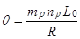
здесь R - радиус кривизны вогнутости земной поверхности;
для площадок, где проявляются сосредоточенные деформации (уступы)
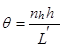
здесь L - длина меньшего отсека; значение L не должно превышать расстояния между уступами.
Размер деформационного шва между отсеками следует принимать не менее 20 см.
ПРИЛОЖЕНИЕ
1
Рекомендуемое
ОСОБЕННОСТИ ПРОЕКТИРОВАНИЯ ЗДАНИЙ И СООРУЖЕНИЙ ДЛЯ СТРОИТЕЛЬСТВА НА ПРОСАДОЧНЫХ ГРУНТАХ
1. При проектировании зданий и сооружений для строительства на просадочных грунтах следует учитывать:
в грунтовых условиях I типа по просадочности - просадки грунтов от внешней нагрузки и собственного веса грунта;
в грунтовых условиях II типа по просадочности - деформации земной поверхности, возникающие вследствие просадки грунтов от собственного веса, просадки от внешней нагрузки, а также горизонтальные деформации земной поверхности.
Допускается не учитывать просадочные свойства грунтов при проектировании зданий и сооружений в случае невозможности замачивания основания в течение всего срока эксплуатации объекта.
2. Проектирование зданий и сооружений для строительства на просадочных грунтах при возможности их замачивания следует осуществлять с применением одного из принципов защиты:
а) устранения просадочных свойств грунтов в пределах просадочной толщи уплотнением их или закреплением;
б) прорезки просадочной толщи свайными фундаментами с передачей всей нагрузки и сил отрицательного трения проседающего грунта на подстилающие непросадочные грунты;
в) комплекса мероприятий, включающего частичное устранение просадочности грунтов основания и защиту слоя просадочных грунтов с неустраненной просадочностью от возможного замачивания, и конструктивные меры защиты, повышающие несущую способность зданий (сооружений) при деформационных воздействиях, вызванных замачиванием грунтов с неустраненными просадочными свойствами; выравнивание зданий (сооружений) или отдельных их элементов; водозащиту грунтов основания.
3. При проектировании зданий и сооружений, предназначенных для строительства на площадках с грунтовыми условиями I типа по просадочности, следует, как правило, предусматривать полное устранение просадочных свойств грунтов в пределах верхней зоны просадки или полную прорезку просадочной толщи свайными или другими фундаментами. При этом проектирование конструкций следует производить как на обычных непросадочных грунтах без дополнительных конструктивных и водозащитных мероприятий.
4. При проектировании зданий и сооружений, предназначенных для строительства на площадках с грунтовыми условиями II типа по просадочности, следует в целях уменьшения деформаций оснований применять, как правило, полное устранение просадочных свойств грунтов в пределах всей просадочной толщи либо ее прорезку глубокими фундаментами, в том числе свайными или закрепленными массивами грунта.
Размеры, несущую способность уплотненных, закрепленных массивов грунта, а также свайных фундаментов при полной прорезке просадочных толщ следует назначать с учетом сил отрицательного трения, возникающих при просадке окружающих грунтов от их собственного веса.
При невозможности или нецелесообразности (по технико-экономическим показателям) полного устранения просадочных свойств грунтов II типа по просадочности либо полной их прорезки фундаментами, необходимо применять комплекс мероприятий.
Объем и состав строительных мер защиты при этом определяются из расчета конструкций зданий и сооружений на воздействие неравномерных деформаций основания от просадки грунтов.
5. Размер деформационного шва между отсеками зданий и сооружений с жесткой конструктивной схемой при проектировании на основе комплекса мероприятий следует определять по формулам:
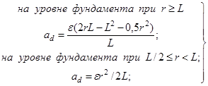
на уровне карниза
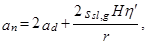
где er - значение относительной горизонтальной деформации, определяемой по формуле (10) рекомендуемого приложения 10;
L - длина отсека;
r - расчетная длина криволинейного участка просадки грунта от собственного веса, определяемая по формуле (7) рекомендуемого приложения 10;
Н - расстояние от подошвы фундамента до верха стены;
ssl,g - просадка грунта от собственного веса;
h - коэффициент условий работы, учитывающий совместную работу здания с основанием и принимаемый равным h = (r/L)2 при r < L и h = 1 при r ³ L.
Размер деформационного шва между отсеками должен быть не менее:
при H £ 10 м ad = 10 см;
« H ³ 30 « ad = 30 «;
« 30 > Н > 10 м размер шва определяется интерполяцией.
6. В проектах зданий и сооружений, возводимых в грунтовых условиях II типа по просадочности с применением комплекса мероприятий, необходимо предусматривать установку марок для наблюдения за осадками зданий и сооружений.
7. Для восстановления проектного положения зданий и сооружений, возводимых в грунтовых условиях II типа по просадочности с комплексом мероприятий; на консолидированных основаниях и во всех других случаях, когда ожидаемые расчетные деформации основания могут превышать величины, на которые рассчитаны проектируемые объекты, следует предусматривать возможность их выравнивания.
ПРИЛОЖЕНИЕ
2
Обязательное
ОСОБЕННОСТИ ПРОЕКТИРОВАНИЯ ЗДАНИЙ И СООРУЖЕНИЙ С УЧЕТОМ ИХ ВЫРАВНИВАНИЯ В ПЕРИОД ЭКСПЛУАТАЦИИ
1. Выравнивание зданий и сооружений, отдельных конструктивных элементов и технологического оборудования следует осуществлять методами, прошедшими достаточную экспериментальную проверку в натурных условиях. Выравнивание допускается осуществлять с помощью специальных устройств (например, гидравлических домкратов); посредством локального изменения деформационной способности основания (выбуриванием грунта в основании, регулируемым замачиванием грунтов основания). Выбор метода выравнивания производится в зависимости от конструктивного решения здания (сооружения), грунтовых условий площадки строительства, величины, а для подрабатываемых территорий - также скорости нарастания деформаций земной поверхности.
Примечания: 1. Выравнивание зданий и сооружений, как мера защиты от воздействия неравномерных деформаций основания, не исключает применения других мер защиты (конструктивных, подготовки основания и пр.).
2. Принципиальные конструктивные решения проектов зданий и сооружений, разрабатываемые с учетом их выравнивания, следует согласовывать с организацией, специализирующейся в этой области, и заказчиком.
2. При проектировании бескаркасных зданий и сооружений с возможностью их выравнивания домкратами в фундаментной части следует предусматривать проемы (для размещения домкратов) и горизонтальный разделительный шов между поднимаемой и опорной частями здания (сооружения), а также обеспечивать свободный доступ к местам установки выравнивающих устройств. В местах размещения устройств высота от пола до выступающих конструкций потолка должна быть не менее 1,9 м.
В проектах зданий и сооружений, подлежащих выравниванию, следует предусматривать закладку при строительстве марок для инструментальных наблюдений в период их эксплуатации.
3. Шахты лифтов следует проектировать опирающимися на выравниваемую (поднимаемую) часть здания или обособленными на самостоятельных фундаментах, отделенных от конструкций фундаментов и конструкций надземной части здания разделительным швом и зазорами размерами, достаточными для корректировки отклонений от вертикали лифтовых шахт. В фундаментах лифтовых шахт должны быть предусмотрены проемы для установки выравнивающих устройств.
4. Системы теплоснабжения, внутреннего водопровода и канализации необходимо проектировать с учетом конструктивных мероприятий, обеспечивающих нормальную эксплуатацию трубопроводов в процессе выравнивания здания (сооружения):
прокладки трубопроводов вне проемов, предназначенных для размещения выравнивающих устройств;
крепления стояков и разводящих трубопроводов к конструкциям здания (сооружения), расположенным выше горизонтального разделительного шва, между опорной и поднимаемой частями здания (сооружения);
устройства отверстий для пропуска трубопроводов через стены и фундаменты и обеспечения зазоров между трубопроводами и строительными конструкциями;
устройства компенсаторов, обеспечивающих горизонтальные и вертикальные перемещения трубопроводов;
установки запорных вентилей на всех стояках водопровода холодной и горячей воды.
5. При проектировании каркасных зданий и сооружений с конструктивной схемой в виде каркаса, подлежащего выравниванию, конструктивное решение колонн, фундаментов и узлов крепления связей к колоннам в блоках жесткости должно допускать (в соответствии с технологией выравнивания) установку выравнивающих устройств и опорных приспособлений для них.
Крепления подкрановых балок к колоннам не должны препятствовать их рихтовке в вертикальной и горизонтальной плоскостях.
Крепления к колоннам связей и ограждающих конструкций, а также величина зазора между торцами стеновых панелей должны допускать взаимные вертикальные перемещения конструкций при выравнивании здания.
Крепления плит покрытия здания должны быть податливыми в вертикальной плоскости и жесткими - в плоскости диска покрытия.
6. Плитные и массивные фундаменты под сооружения и оборудование, подлежащие выравниванию домкратами, следует проектировать с устройством:
разделительного шва между нижней (опорной) и верхней цокольной частями фундамента;
проемов в опорной или цокольной части фундамента для размещения домкратов;
страховочных элементов, выполняющих в процессе эксплуатации и во время работ по выравниванию роль связей между цокольной и опорной частями фундамента.
7. Выравнивание зданий и сооружений выбуриванием (частичным извлечением) грунта из-под подошвы фундамента следует, как правило, предусматривать в проектах зданий (сооружений), имеющих высокую пространственную жесткость.
Основания зданий, подлежащие выбуриванию, должны быть сложены грунтами с модулем деформации Е £ 25 МПа. При Е > 25 МПа в проектах следует предусматривать устройство грунтовых подушек, выполняемых в соответствии с указаниями СНиП 2.02.01-83.
8. Регулируемое замачивание следует применять для устранения крена жестких зданий и сооружений при неравномерной просадке грунтов; заключается в их контролируемом замачивании со стороны, противоположной направлению крена. Метод применяется при однородных по просадочным свойствам и толщине грунтовых слоях в основании выравниваемого здания (сооружения).
Работы по регулируемому замачиванию грунтов необходимо выполнять под непрерывным геодезическим наблюдением за развитием осадок фундаментов и поверхности земли, с замерами послойных деформаций основания с помощью глубинных марок.
ПРИЛОЖЕНИЕ 3
Обязательное
ГОРНЫЕ МЕРЫ ЗАЩИТЫ ЗДАНИЙ И СООРУЖЕНИЙ, ВОЗВОДИМЫХ НА ПОДРАБАТЫВАЕМЫХ ТЕРРИТОРИЯХ
1. Горные меры защиты зданий и сооружений следует предусматривать в целях снижения величин деформаций земной поверхности.
2. Горные меры защиты зданий и сооружений следует назначать в тех случаях, когда применение одних только строительных мер защиты недостаточно для обеспечения надежной эксплуатации подрабатываемых зданий и сооружений или нецелесообразно с экономической точки зрения.
3. Горные меры защиты зданий и сооружений допускается предусматривать по согласованию с заинтересованными горнодобывающими предприятиями.
В качестве горных мер следует предусматривать:
а) полную или частичную закладку выработанного пространства;
б) разработку пластов с разрывом во времени, рассредоточение горных работ в пространстве; разработку пластов в определенной последовательности; одновременное проведение горных работ на отдельных участках, обеспечивающее снижение деформаций в основании объектов;
в) неполную выемку полезных ископаемых по площади и мощности по согласованию с органами Госпроматомнадзора СССР.
4. В случае применения горных мер защиты зданий и сооружений ожидаемые деформации земной поверхности следует определять по методикам, разработанным институтами, специализирующимися в этой области.
ПРИЛОЖЕНИЕ 4
Рекомендуемое
МЕРОПРИЯТИЯ ПО УСТРАНЕНИЮ ИЛИ УМЕНЬШЕНИЮ ДЕФОРМАЦИЙ ОСНОВАНИЙ, СЛОЖЕННЫХ ПРОСАДОЧНЫМИ ГРУНТАМИ
1. В состав мероприятий, устраняющих или уменьшающих деформации оснований, сложенных просадочными грунтами, входят:
глубинное уплотнение с предварительным замачиванием нижних слоев грунта (в том числе глубинными взрывами), регулируемое замачивание, а также другие, проверенные на практике, методы;
прорезка толщи свайными фундаментами из забивных, набивных, буронабивных и других типов свай, а также столбами или лентами из грунта, закрепленного химическим, термическим или другими способами;
уплотнение грунта тяжелыми трамбовками или устройством грунтовой подушки, препятствующей замачиванию грунтов сверху;
водозащитные мероприятия, снижающие вероятность замачивания грунтов и величину просадки, а также уменьшающие вероятность подтопления территорий и подъема уровня подземных вод.
2. Уплотнение просадочных грунтов предварительным замачиванием (в том числе глубинными взрывами) следует применять при просадочных толщах глубиной свыше 8 м для устранения просадочности грунтов в нижних слоях толщи, снижения их деформативности и повышения несущей способности.
Здания и сооружения на основаниях, уплотненных предварительным замачиванием (в том числе глубинными взрывами), следует проектировать с учетом неравномерных осадок грунтов от внешней нагрузки и длительности времени их консолидации.
3. Регулируемое замачивание в грунтовых условиях I и II типов по просадочности с просадкой грунтов от собственного веса до 1,5 м следует применять для устранения просадочных свойств грунтов замачиванием их в процессе возведения зданий (сооружений) и уплотнением под воздействием внешней нагрузки и собственного веса грунта.
В грунтовых условиях I и II типов по просадочности с просадкой грунтов от собственного веса до 0,5 м следует применять одностадийное замачивание в процессе возведения объекта. При просадке грунтов от собственного веса свыше 0,5 м замачивание следует осуществлять в две стадии: первая - до возведения здания (сооружения), вторая - в процессе его возведения.
При одностадийном замачивании здания (сооружения) следует проектировать с учетом неравномерных осадок замоченного грунта под действием внешней нагрузки, а в грунтовых условиях II типа по просадочности - на деформационное воздействие неравномерного оседания грунтов от собственного веса.
При двухстадийном замачивании здания (сооружения) следует проектировать с учетом неравномерных осадок от внешней нагрузки, исходя из условия завершения оседания грунтов от собственного веса в период предварительной стадии замачивания.
4. Свайные фундаменты на просадочных грунтах следует проектировать с полной прорезкой всех слоев просадочных и других видов грунтов, прочностные характеристики которых снижаются при замачивании. Опирание концов свай следует, как правило, предусматривать в малосжимаемые грунты (скальные, крупнообломочные с песчаным заполнителем, плотные и средней плотности песчаные и пылевато-глинистые).
5. Допускается применять висячие сваи при условии полной прорезки просадочных грунтов в тех случаях, когда сваи-стойки нельзя устраивать из-за отсутствия на необходимой глубине скальных или малосжимаемых грунтов. Здания (сооружения) следует проектировать в этих случаях с учетом неравномерных осадок свайного фундамента, вызванных силами отрицательного трения по боковой поверхности свай при подъеме уровня подземных вод или при замачивании грунтов из внешнего источника под частью здания (сооружения).
6. Частичное устранение просадочных свойств грунтов в верхней части просадочной толщи рекомендуется применять в сочетании с водозащитными и конструктивными мероприятиями.
Уплотнение тяжелыми трамбовками грунтов со степенью влажности sr £ 0,7 и плотностью рd £ 0,55 т/м3 производится в целях:
устранения просадочных свойств грунтов в пределах всей или части деформируемой зоны основания;
создания в основании здания (сооружения) сплошного маловодопроницаемого экрана, препятствующего интенсивному замачиванию нижележащих просадочных грунтов;
повышения плотности, прочностных характеристик и уменьшения сжимаемости грунтов при последующем их водонасыщении. Уплотнение грунтов тяжелыми трамбовками допускается на расстоянии от существующих зданий и сооружений, достаточном для устранения влияния на них динамических воздействий.
Устройством грунтовых подушек следует предусматривать замену просадочного грунта в пределах всей или части деформируемой зоны местным глинистым грунтом, послойно уплотненным укаткой или трамбовкой.
Грунтовые подушки следует устраивать:
при степени влажности просадочных грунтов в основании фундаментов sr > 0,7 для создания в основании фундаментов уплотненного слоя большей толщины, чем при уплотнении тяжелыми трамбовками;
при расположении строительной площадки на расстоянии, менее допустимого по условиям безопасности окружающей застройки при применении тяжелых трамбовок;
при отсутствии механизмов для использования тяжелых трамбовок.
Допускается устройство двухслойного основания, включающего уплотнение грунта тяжелыми трамбовками, и грунтовой подушки.
7. Водозащитные мероприятия при строительстве зданий (сооружений) на просадочных грунтах следует предусматривать для предотвращения или снижения вероятности замачивания основания зданий (сооружений) и развития неравномерных осадок и просадок грунтов, контроля за состоянием водонесущих сетей и для возможности их осмотра и ремонта.
8. В состав водозащитных мероприятий должны входить:
компоновка генерального плана;
вертикальная планировка застраиваемой территории;
устройство под зданиями маловодопроницаемых экранов из уплотненного грунта (при строительстве с комплексом мероприятий);
качественное уплотнение обратной засыпки пазух котлованов и траншей;
устройство отмосток по наружному периметру зданий (сооружений);
прокладка наружных и внутренних водонесущих коммуникаций с учетом предотвращения возможности утечки из них воды в грунт и обеспечения контроля коммуникаций, их ремонта, сброса аварийных вод.
9. Отмостки, устраиваемые по периметру зданий и сооружений, следует предусматривать, как правило, совмещенными с тротуарами и проездами. Ширина отмосток должна быть не менее 2 м на площадках с грунтовыми условиями II типа по просадочности и не менее 1,5 м - на площадках с грунтовыми условиями I типа, а также на площадках с грунтовыми условиями II типа по просадочности при устранении просадочных свойств грунтов или прорезке их сваями.
10. Водозащиту грунтов основания зданий и сооружений следует предусматривать в соответствии со СНиП 2.04.01-85 «Внутренний водопровод и канализация зданий» устройством водонепроницаемых полов в подвалах, подпольях и т. п., применением компенсаторов в местах пересечения деформационных швов трубопроводами или гибкими стыками трубопроводов и т. п.
11. Внутренние трубопроводы следует прокладывать выше уровня пола подвальных этажей с приспособлениями или компенсаторами, исключающими возможность повреждения трубопроводов при неравномерных осадках фундаментов. Внутренние трубопроводы должны быть доступны для осмотра и ремонта.
12. В грунтовых условиях I типа по просадочности в подвальных этажах допускается прокладывать транзитные водонесущие сети и сети канализации, а также предусматривать выпуски канализации выше пола подвала.
Разрешается прокладка транзитных коммуникаций через помещения подземного хозяйства производственных зданий (технологические подвалы, приямки и т. п.) в случаях, когда это не нарушает технологического процесса и удовлетворяет требованиям техники безопасности.
13. В грунтовых условиях II типа по просадочности транзитные коммуникации, содержащие жидкость, прокладываемые ниже отметки пола 1-го этажа, не должны пересекать помещений подземного хозяйства цехов, приямков с технологическим оборудованием, а также лестничных клеток, мусоропроводов и т.п. Но допускается пересечение канализационными трубопроводами деформационных швов между смежными частями зданий и сооружений.
Вводы водопровода и теплосетей, а также выпуски канализации на участках между зданием (сооружением) и контрольным колодцем, должны быть проложены в водонепроницаемых железобетонных каналах.
14. Примыкание каналов к фундаментам зданий и сооружений должно быть герметичным, его следует выполнять с учетом возможных просадок канала и фундамента здания (сооружения). Минимальные расстояния в плане от наружных поверхностей водопроводных и канализационных труб до граней фундаментов следует принимать:
в грунтовых условиях I типа по просадочности - не менее 5 м;
в грунтовых условиях II типа по просадочности - по следующей таблице:
|
Толщина слоя просадочного грунта, м |
Расстояние, м, при диаметре труб, мм |
||
|
до 100 |
св. 100 до 300 |
св. 300 |
|
|
До 12 |
5 |
7,5 |
10 |
|
Св. 12 |
7,5 |
10 |
15 |
Прокладку трубопроводов следует предусматривать в водонепроницаемых каналах с уплотнением дна траншей и с обязательным устройством выпусков аварийных вод из каналов в контрольные устройства с удалением из них воды.
15. При отсутствии в районе строительства ливнесточной канализации воду из внутренних стоков допускается выпускать в открытые водонепроницаемые лотки, проложенные через зеленые зоны, отмостки или тротуары (проезды) в местную ливнесточную сеть. Выпуск воды из внутренних водостоков в хозяйственно-бытовую канализацию не допускается.
16. Отопительные системы зданий и сооружений следует предусматривать такими, чтобы подводки к нагревательным приборам не пересекали деформационные швы здания (сооружения).
Внутренние канализационные сети следует группировать в объединенные выпуски из зданий (сооружений) через контрольные колодцы с последующим подключением их к ближайшему колодцу сети канализации.
17. Напорные и самотечные трубопроводы в грунтовых условиях I типа по просадочности допускается проектировать без учета просадочности грунтов. В грунтовых условиях II типа по просадочности трубопроводы следует проектировать в соответствии с требованиями СНиП 2.04.02-84 «Водоснабжение. Наружные сети и сооружения» и СНиП 2.04.03-85 «Канализация. Наружные сети и сооружения».
18. Водозащиту просадочных грунтов следует дублировать установкой предохранительных и сигнализационных устройств в системах сброса аварийных вод для оповещения об утечках, монтируемых в специальных водонепроницаемых приямках или контрольных колодцах, в которых также должны быть расположены запорные устройства трубопроводов, температурные компенсаторы теплофикационных сетей и т. п.
Аварийные воды из контрольных колодцев следует откачивать, а при наличии местных условий - сбрасывать самотеком на участки территорий, не подлежащих застройке.
19. На случай аварии водонесущих сетей и для немедленного отключения аварийных участков трасс в распоряжении обслуживающего персонала производственных предприятий, жилых кварталов, микрорайонов и т. п. должны быть детальные схемы водонесущих сетей обслуживаемой территории с указанием их вводов и выпусков, смотровых и контрольных колодцев, мест расположения запорных устройств, задвижек на водоводах и т. п.
20. Отвод атмосферных вод с кровли зданий и покрытий сооружений должен осуществляться в наружную ливнесточную или общесплавную канализационную сеть. При отсутствии указанной сети отвод воды следует осуществлять в местную ливнесточную сеть со сбросом в безопасные места за пределами территории, подлежащей застройке.
Организованный наружный водоотвод допускается только в III и IV строительно-климатических зонах для зданий высотой не более пяти этажей включительно. Попадающая на отмостку вода должна поступать в ливнесточную сеть через водоприемники или лотки. Отвод воды из водостоков в хозяйственно-бытовую канализацию не допускается.
ПРИЛОЖЕНИЕ 5
Обязательное
КАРКАСНЫЕ ЗДАНИЯ
1. Каркасные здания, возводимые на подрабатываемых территориях и на просадочных грунтах, следует, как правило, проектировать по податливым и комбинированным конструктивным схемам.
Примечание. При проектировании зданий на подрабатываемых территориях I, Iк и IIк групп предпочтение следует отдавать зданиям с металлическим каркасом.
2. Допускается при соответствующем технико-экономическом обосновании проектировать каркасные здания по жестким конструктивным схемам.
3. Конструктивные решения каркасных зданий следует выбирать в зависимости от расчетных величин деформаций земной поверхности, инженерно-геологических условий площадки строительства и эксплуатационных требований к объекту.
4. Многоэтажные каркасные здания следует проектировать в виде комбинированной конструктивной и связевой систем (черт. 1 настоящего приложения).
При выборе конструктивных систем многоэтажных каркасных зданий следует отдавать предпочтение каркасам с укрупненными сетками колонн.
Черт. 1. Схемы рам каркасов многоэтажных зданий
а - комбинированной конструктивной системы; б - связевой системы
5. Фундаменты многоэтажных каркасных зданий, выполненных на основе связевой схемы, следует проектировать в виде перекрестных лент, сечение которых необходимо определять расчетом на воздействия неравномерных деформаций основания.
6. Шарнирные узлы сопряжений элементов многоэтажных каркасных зданий допускается выполнять с опиранием ригелей на консоли колонн через связевые прокладки-компенсаторы (черт. 2 настоящего приложения).
7. Многоэтажные каркасные здания следует рассчитывать на воздействие крена, вызванного подработкой, по деформированной схеме, если продольные силы в стойках каркаса от расчетных нагрузок составляют свыше 10 % значения критической силы.
8. Расчетные схемы соответственно поперечных и продольных рам одноэтажных каркасных зданий (черт. 3, 4 настоящего приложения) следует выбирать в соответствии с табл. 1 настоящего приложения.
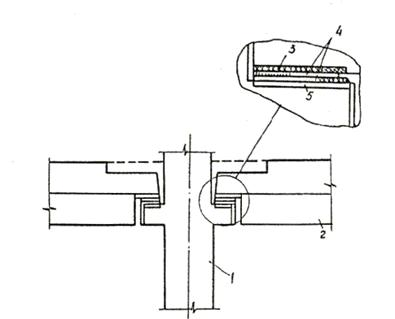
Черт. 2. Конструкция узла сопряжения ригелей с колонной
1 - колонна; 2 - шарнирно-опертый ригель; 3 - закладная деталь ригеля; 4 - нижняя и верхняя связевые пластины; 5 - закладная деталь колонны
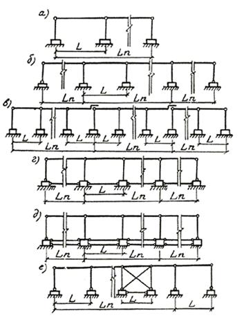
Черт. 3. Схемы поперечных рам одноэтажных каркасных зданий
а-е - типы соединений элементов каркаса
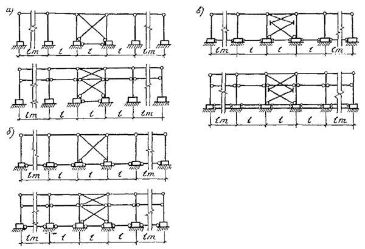
Черт. 4. Схемы продольных рам одноэтажных каркасных зданий (с применением и без применения кранов)
а-в - типы соединений элементов каркаса
Таблица 1
|
Группы подрабатываемых территорий |
Группы условий строительства на просадочных грунтах |
Номер чертежа |
Соединения |
Дополнительные мероприятия по обеспечению устойчивости здания |
|
|
колонн и ригелей |
колонн и фундаментов |
||||
|
А. Поперечные рамы |
|||||
|
IV; IVк; III |
0; I; II; III, IV; |
3, а |
Шарнирно-неподвижное |
Жесткое |
- |
|
II; I; IVк |
II¢; III¢ |
3, б |
То же |
Для колонн средних рядов - жесткое, крайних - шарнирно-неподвижное |
- |
|
II; I; IVк |
0; I; I¢; II¢; III¢ |
3, в |
Для группы колонн - шарнирно-неподвижное, для группы колонн шарнирно-подвижное |
Жесткое |
- |
|
I; IV; IIIк |
0; I; I¢; II¢; III¢ |
3, г |
Шарнирно-неподвижное |
Для колонн средних рядов - жесткое, крайних - шарнирно-неподвижное |
Установка связей-распорок в одном уровне |
|
IIк; Iк; |
0 |
3, д |
То же |
Для колонн средних рядов - жесткое, крайних - шарнирно-неподвижное |
То же, в двух уровнях |
|
II; I; IVк |
I¢; II¢ |
3, е |
Шарнирно-неподвижное |
Шарнирно-неподвижное |
Установка в средней части здания вертикальных связей между колоннами и связей-распорок между фундаментами |
|
Б. Продольные рамы |
|||||
|
IV; IVк; III |
0; I; II; III, IV; I¢ |
4, а |
Шарнирно-неподвижное |
Жесткое |
То же |
|
II; I; IVк |
0; I; I¢ |
4, б |
То же |
« |
« |
|
I; IIк; IIIк |
0; I¢ |
4, в |
« |
« |
Установка в средней части здания вертикальных связей с применением линейно-подвижных соединений, а между фундаментами - связей-распорок в двух уровнях |
|
Примечание. В зданиях с мостовыми кранами на подрабатываемых территориях групп Iк и частично IIк, а также на просадочных грунтах групп 0, I и II целесообразно предусматривать выравнивание каркаса. |
|||||
9. При проектировании одноэтажных каркасных производственных зданий следует, как правило, применять колонны с шагом 6 и 12 м.
Каркасы с колоннами шагом крайних рядов 6 м и средних 12-18 м с применением подстропильных конструкций допускается предусматривать на подрабатываемых территориях групп IV, III и IVк и на просадочных грунтах групп I-IV, II¢, III¢.
10. При проектировании одноэтажных каркасных зданий не следует учитывать перемещения оснований фундаментов:
вертикальные, если разность осадок фундаментов колонн при расчете на особое сочетание нагрузок не превышает значений, приведенных в СНиП 2.02.01-83 «Основания зданий и сооружений»;
горизонтальные, если их значения не превышают значений предельных горизонтальных перемещений, приведенных в табл. 2 настоящего приложения.
11. В случаях, когда несущая способность колонн, опирающихся на отдельно стоящие фундаменты, недостаточна для восприятия усилий от деформаций земной поверхности, в дальнейшее усиление колонн или уменьшение длины отсеков нецелесообразно, следует предусматривать устройство между фундаментами связей-распорок в одном или двух уровнях.
Связи-распорки в двух уровнях целесообразно применять на подрабатываемых территориях групп I, Iк-IIIк и на просадочных грунтах групп I-0, а также на площадках со сложными горногеологическими условиями, рассмотренными в пп. 4.26 и 4.27.
Для уменьшения в связях-распорках усилий от воздействия сдвижения грунта следует устраивать шов скольжения по площади контакта подошвы фундамента с бетонной подготовкой.
Таблица 2
|
Предельные горизонтальные перемещения оснований фундаментов |
||
|
в плоскости рамы |
в направлении связей |
|
|
Из железобетонных колонн сечением площадью 0,15 м2 |
0,002h |
0,004h |
|
То же, сечением площадью от 0,1 до 0,15 м2 включ. |
0,004h |
0,006h |
|
Из стальных колонн |
0,010h |
0,020h |
|
Примечание. За величину Н принимается высота колонн первого яруса рамы. |
||
Если перечисленные мероприятия не обеспечивают требуемой несущей способности колонн, следует изменить конструктивную схему здания или предусмотреть устройство фундаментов в виде перекрестных балочных систем, сплошных железобетонных плит и т. д.
12. Устойчивость одноэтажных каркасных зданий (отсеков) в поперечном направлении следует обеспечивать защемлением колонн в фундаментах (см. черт. 3 настоящего приложения). В продольном направлении по всем средним рядам колонн необходимо устраивать блоки жесткости с вертикальными связями между колоннами (см. черт. 4 настоящего приложения). В пределах блока жесткости фундаменты колонн необходимо связывать связями-распорками.
Допускается обеспечивать устойчивость каркасов одноэтажных зданий установкой специальных элементов жесткости (диафрагм, колонн увеличенного сечения, многоэтажных пристроек) по продольным и поперечным рядам колонн.
Для снижения усилий в вертикальных связях при неравномерных деформациях основания их следует выполнять с применением линейно-подвижных соединений, допускающих возможность перемещения колонн связевого блока при неравномерных осадках относительно связей (см. черт. 4, в настоящего приложения).
Устойчивость многоэтажных зданий в поперечном и продольном направлениях следует обеспечивать защемлением колонн в фундаментах, устройством между колоннами вертикальных связей или выполнением жестких узлов соединений ригелей с колоннами.
Вертикальные связи, обеспечивающие пространственную устойчивость здания или его отсеков, следует группировать в пространственные блоки в средней части здания (отсека). Для обеспечения совместной работы каркаса и пространственных блоков необходимо, чтобы перекрытия имели достаточную жесткость в горизонтальной плоскости.
13. Предельные длину и ширину отсека каркасного здания следует определять в зависимости от расчетных величин деформаций земной поверхности.
Деформационные швы между отсеками следует проектировать в виде парных рам или шарнирно-подвижного опирания пролетных конструкций и перекрывать их компенсаторами с заделкой эластичным заполнителем (пороизолом, поролоном, макропористой резиной и т. п.).
14. Для покрытий одноэтажных каркасных зданий следует, как правило, применять наиболее простые статически определимые конструкции.
15. Целесообразность применения неразрезных систем покрытий следует в каждом случае обосновывать статическим расчетом на неравномерные деформации основания.
16. Применение в качестве покрытий складчатых, тонкостенных пространственных конструкций (сводов-оболочек) и т.п. должно быть обосновано статическим расчетом с учетом воздействия неравномерных деформаций основания, динамических воздействий технологического оборудования, подвесных или мостовых кранов, необходимости (в отдельных случаях) выравнивания здания и других факторов.
17. Для защиты покрытий каркасных зданий от попадания воды при повреждениях кровли вследствие неравномерных деформаций основания в местах примыкания перекрытия к торцовым и продольным (при внутреннем водостоке) стенам следует устраивать в местах примыкания покрытий соседних пролетов компенсаторы (с теплоизоляцией на деформационных швах), а также проклеивать места установки компенсаторов и швы между плитами покрытия внутри гидроизоляционного ковра дополнительными полосами рубероида шириной 1 м.
18. В качестве ограждающих конструкций для каркасных зданий следует применять унифицированные крупноразмерные стеновые панели, обеспечивая их податливое крепление к элементам каркаса здания таким образом, чтобы нагрузки на ограждающие конструкции от деформирования каркаса были минимальными или совсем исключались.
Стеновые ограждающие конструкции следует закреплять в двух углах по горизонтали шарнирно-подвижно, а в двух других - шарнирно-неподвижно. Допускаемую разность осадок смежных колонн здания Dh следует определять по формуле
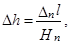
где Dn - величина зазора между стеновыми панелями;
l - расстояние между осями смежных колонн;
Нn - высота стеновой панели.
19. При применении самонесущих каменных стен следует предусматривать их разрезку у колонн каркаса здания с опиранием на рандбалки и креплением к элементам каркаса. Внутренние стены, проходящие по осям каркаса здания, следует крепить к колоннам гибкими анкерами и предусматривать зазоры не менее 50 мм в местах примыкания к наружным стенам, плитам и ригелям и в местах пересечения их технологическими и санитарно-техническими трубопроводами.
20. Жесткие полы по грунту (бетонные, ксилолитовые и др.) необходимо проектировать с разрезкой их на карты со сторонами не более 6 м. Ширину шва между картами следует определять по формуле (4) п. 4.31 и формуле (1) рекомендуемого приложения 1, в которых за величину L и L0 следует принимать расстояние между центрами смежных карт в рассматриваемом направлении. Швы между картами следует заделывать эластичным заполнителем (битумной мастикой, пороизоловым жгутом и др.). Допускается использовать бетонный армированный пол в качестве связей-распорок. В этом случае его не следует разрезать на карты.
21. Стены лестничных клеток допускается использовать в качестве блоков жесткости, обеспечивающих пространственную устойчивость здания (отсека).
Размеры проемов в перекрытиях под оборудование и коммуникации следует назначать с учетом их возможных взаимных смещений в горизонтальной плоскости. Необходимо предусматривать возможность рихтовки оборудования в процессе подработки.
22. В производственных зданиях в качестве подъемно-транспортных средств следует отдавать предпочтение подвесному и напольному подъемно-транспортному оборудованию.
Для обеспечения нормальной работы кранов следует предусматривать возможность рихтовки подкрановых конструкций, регулировки подвесок.
23. В зданиях с мостовыми кранами следует применять разрезные подкрановые балки.
В местах разделения здания на отсеки следует предусматривать консольное опирание подкрановых балок или устройство специальных балок-компенсаторов, деформационную способность которых следует определять в зависимости от ожидаемой величины деформационного шва.
24. Габариты приближения кранов к элементам здания необходимо назначать с учетом возможных рихтовок крановых путей. Допускается увеличение высоты надкрановой части колонны или применение металлических подкрановых балок с пониженной опорной частью.
25. Величина наклона подкранового пути мостовых кранов, вызванного деформациями земной поверхности, не должна превышать следующие предельные значения:
в поперечном направлении i = 410-3;
« продольном « i = 610-3.
Необходимую степень рихтовки путей и габариты приближения кранов следует определять исходя из расчетных деформаций земной поверхности и предельных значений наклонов подкрановых путей.
После окончания активной стадии сдвижения земной поверхности подкрановые пути должны быть отрихтованы в соответствии с Правилами устройства и безопасной эксплуатации грузоподъемных кранов.
ПРИЛОЖЕНИЕ 6
Обязательное
БЕСКАРКАСНЫЕ ЗДАНИЯ
1. Бескаркасные здания на подрабатываемых территориях и просадочных грунтах следует проектировать по жестким или комбинированным конструктивным схемам, не допускающим прогрессирующего обрушения частей зданий при повреждении отдельных несущих конструкций:
с продольными несущими стенами и поперечными диафрагмами жесткости (стены лестничных клеток, лифтовых шахт и др.);
с поперечными и продольными несущими стенами.
Примечание. Надземную часть бескаркасных жилых и общественных зданий следует, как правило, проектировать по жесткой конструктивной схеме.
2. Несущие стены зданий следует располагать, как правило, симметрично относительно продольной и поперечной осей зданий и обеспечивать равномерное распределение жесткостей по длине и ширине здания.
Поперечные стены следует проектировать сквозными на всю ширину здания. В случае, если по планировочным требованиям нарушается сквозное расположение поперечных стен, необходимо предусматривать устройство их связи с внутренней продольной стеной, которое должно обеспечивать совместную работу продольных и поперечных стен как единой перекрестной системы. При этом смещение поперечных стен допускается на величину (в осях) не более 0,6 м.
Величина смещения продольных стен допускается не более 1,8 м, при этом место излома продольных стен должно быть связано с поперечными несущими стенами.
3. Конструкции бескаркасных зданий, в том числе зданий со встроенными помещениями, следует проектировать как элементы единой пространственной системы для восприятия усилий от приходящихся на них нагрузок и воздействий неравномерных деформаций основания. С этой целью необходимо предусматривать:
устройство замкнутых фундаментного и цокольного поясов по всем наружным и внутренним стенам;
устройство в крупноблочных и кирпичных зданиях поэтажных железобетонных поясов, располагаемых в уровне перемычек или перекрытий по всем наружным и внутренним стенам, а в панельных зданиях - поэтажных поясов, совмещенных с конструкциями наружных и внутренних стеновых панелей;
соединение конструкций фундаментов с надфундаментными конструкциями с вертикальными связями;
соединение панелей перекрытий между собой и с несущими стенами, а также заливку швов между панелями цементным раствором марки 100.
В панельных зданиях допускается совмещение фундаментного и цокольного поясов с конструкциями цокольных железобетонных панелей.
4. Типовые проекты зданий должны предусматривать общие объемно-планировочные и конструктивные решения надземной части. Конструктивные решения подземной части следует разрабатывать в нескольких вариантах применительно к различным условиям строительства.
5. Деформационные швы в бескаркасных зданиях следует предусматривать в виде парных поперечных стен. Толщина стен должна отвечать теплотехническим требованиям, предъявляемым к зданиям в зависимости от расчетной температуры наружного воздуха.
6. В крупнопанельных зданиях стыки между элементами следует выполнять одним из следующих способов:
в виде шпонок со сваркой арматурных выпусков и замоноличиванием шпонок бетоном;
сваркой стальных закладных деталей, приваренных к рабочей арматуре;
соединением скобами петлевых выпусков с последующим замоноличиванием.
Сечение соединительных элементов в стыках между элементами стен следует определять расчетом.
В горизонтальных стыках панелей следует предусматривать швы из цементного раствора марки не ниже 100.
Стальные закладные детали и соединительные элементы в стыках должны быть защищены от коррозии.
7. В каменных зданиях углы и пересечения стен следует армировать сетками с ячейками размером 7 ´ 7 см из арматуры диаметром 4-6 мм, укладываемыми в горизонтальных швах по высоте элемента через 1 м и заделываемыми в каждую сторону от пересечений осей стен на 1,2-1,5 м.
Глубина опирания панелей перекрытий и покрытий на несущие стены панельных зданий должна быть не менее 12 см.
8. Конструкции, ослабленные каналами, штрабами, нишами, должны быть усилены установкой дополнительной арматуры в соответствии с расчетом или конструктивными требованиями.
9. Конструкции фундаментно-подвальной части бескаркасных зданий следует проектировать преимущественно сборно-монолитными с применением сборных изделий заводского изготовления. В случае если такие решения не обеспечивают достаточной прочности и жесткости, следует подземную часть здания проектировать монолитной. В целях увеличения жесткости допускается также предусматривать устройство в фундаментно-подвальной части здания дополнительных стен.
10. При устройстве лоджий со смещением участков продольных стен на расстояние не более 1,5 м в осях следует предусматривать прямолинейные железобетонные стеновые и фундаментные пояса в плоскости стены, а также по контуру лоджий.
В качестве прямолинейных элементов стеновых поясов допускается использовать конструкции перекрытий над лоджиями, которые должны быть усилены в месте изломов и иметь надежные связи с конструкциями основного пояса.
Одна из стен лоджии должна быть, как правило, продолжением поперечной стены здания.
Балконы и эркеры следует устраивать на консольном выносе перекрытий.
В зданиях, проектируемых с учетом выравнивания, следует предусматривать опирание лоджий на перекрытие.
ПРИЛОЖЕНИЕ 7
Обязательное
ИНЖЕНЕРНЫЕ СООРУЖЕНИЯ И ТРУБОПРОВОДЫ
1. Сооружения башенного типа (силовые корпуса, угольные башни и т.п.) следует проектировать на основе жестких конструктивных схем.
При расчетных кренах башенных сооружений, превышающих предельные, необходимо увеличивать размеры подошвы фундамента, опускать, по возможности, центр тяжести сооружения, предусматривать вантовые устройства, а также мероприятия по выравниванию сооружения.
2. Транспортерные галереи следует проектировать по податливым схемам.
Для подрабатываемых территорий групп I, Iк и II, IIк (табл. 1, 2 п.2.4), а также для просадочных грунтов групп I¢, 0, I и II (табл. 5, 6 п.2.9) несущие конструкции транспортерных галерей необходимо, как правило, предусматривать металлическими.
3. Транспортерные галереи следует предусматривать разрезной конструкции со швами на опорах, при этом должна обеспечиваться возможность рихтовки галереи на опорах в горизонтальной плоскости по нормали к ее продольной оси.
Опирание транспортерной галереи на здание следует проектировать подвижным. Деформационные швы должны быть перекрыты нащельниками.
4. Опоры транспортерных галерей на подрабатываемых территориях групп Iк-IIIк следует проектировать на общих фундаментах, рассчитанных на воздействие уступов земной поверхности в их основании.
5. Протяженные подземные сооружения (тоннели, каналы, переходы и т.п.) следует проектировать:
в продольном направлении - по податливым схемам с разрезкой деформационными швами на отдельные жесткие отсеки;
в поперечном направлении - по податливым и жестким конструктивным схемам.
6. Длину отсеков протяженных подземных сооружений следует принимать в зависимости от несущей способности конструкции, величин нагрузок и воздействий от деформаций основания.
Деформационные швы между смежными отсеками необходимо защищать от попадания подземных вод с применением упругих заполнений, компенсационных вставок и т.п.
7. Продольные уклоны протяженного подземного сооружения, предусматриваемые для отвода аварийных вод, следует устанавливать с учетом возможных наклонов земной поверхности.
8. Для обеспечения нормальной эксплуатации инженерных коммуникаций, проложенных в протяженных подземных сооружениях, следует предусматривать устройство специальных податливых опор и компенсационных устройств.
9. Емкостные заглубленные сооружения, возводимые на подрабатываемых территориях, следует проектировать по податливым, комбинированным или жестким конструктивным схемам с учетом требований СНиП 2.04.01-85, СНиП 2.04.02-84, СНиП 2.04.03-85.
10. При проектировании закрытых емкостных заглубленных сооружений преимущество следует отдавать податливым и комбинированным конструктивным схемам.
Податливая конструктивная схема осуществляется устройством приспособленных к неравномерным деформациям основания податливых водонепроницаемых швов на стыках сборных конструктивных стен, а также в их соединениях с покрытием, днищем и перегородками.
11. При проектировании открытых емкостных заглубленных сооружений предпочтение следует отдавать жестким и комбинированным конструктивным схемам.
Открытые емкостные заглубленные сооружения, имеющие стационарное оборудование, следует проектировать по жестким схемам.
Открытые заглубленные сооружения, не имеющие стационарного оборудования, следует проектировать:
прямоугольными в плане - по жесткой конструктивной схеме;
круглыми - по жесткой конструктивной схеме при наличии подземных вод и по комбинированной - с днищем, отсеченным от стен деформационным швом, при отсутствии подземных вод.
12. При проектировании емкостных заглубленных сооружений для строительства на площадках с высоким уровнем подземных вод конструкции податливых швов должны обеспечивать восприятие двухстороннего гидростатического давления.
13. Расстояние от водосодержащих сооружений, проектируемых для строительства на просадочных грунтах, до зданий и сооружений должно быть:
при грунтовых условиях I типа по просадочности - не менее полуторной толщины просадочного слоя;
при грунтовых условиях II типа по просадочности при водопроницаемых подстилающих грунтах - не менее полуторной толщины просадочного слоя, при водонепроницаемых - не менее трехкратной толщины этого слоя (но более 40 м).
14. Сооружения с мокрыми технологическими процессами и сооружения, предназначенные для хранения запасов воды (градирни, брызгальные бассейны, очистные устройства, резервуары и т.п.), следует проектировать с учетом водозащитных мероприятий.
Сооружения, эксплуатация которых приводит к обводнению прилегающей к ним территории (брызгальные бассейны, градирни и т.п.), необходимо окружать отмостками шириной не менее 10 м с уклонами 3 % в сторону сооружения.
15. Сооружения, у которых замачивание просадочных грунтов оснований возможно из-за утечек из внутренних сетей близко расположенных наружных водонесущих коммуникаций или из-за общего или местного повышения уровня подземных вод, следует проектировать с учетом водозащитных мероприятий, а в случае подтопления заглубленных частей - с учетом воздействия подпора подземных вод.
16. Не допускаются строительство на подрабатываемых территориях объектов с ядерными технологическими процессами и предприятий по производству и хранению токсичных, взрыво- и пожароопасных веществ, а также прокладка соответствующих технологических трубопроводов.
17. Трубопроводы, транспортирующие взрыво- и пожароопасные жидкости и газы на просадочных грунтах, следует прокладывать на безопасных расстояниях от жилых массивов, промышленных предприятий, железных, шоссейных дорог и других объектов в соответствии со СНиП 2.04.07-86 «Тепловые сети», СНиП II-89-80 «Генеральные планы промышленных предприятий» и СНиП 2.04.02-84 «Водоснабжение. Наружные сети и сооружения».
18. Прочность трубопроводов следует проверять при совместном действии нагрузок, возникающих в обычных условиях строительства и регламентированных установленными нормами, а также при воздействиях от подработки или просадки грунтов.
19. В качестве конструктивных мер защиты следует устанавливать компенсаторы, повышать прочность труб и сварных стыков в сочетании с полимерными покрытиями и малозащемляющими обсыпками, а также повышать герметичность раструбных стыков.
ПРИЛОЖЕНИЕ 8
Справочное
ТЕРМИНЫ И ОПРЕДЕЛЕНИЯ (ДЛЯ ПОДРАБАТЫВАЕМЫХ ТЕРРИТОРИЙ)
1. Вероятные сдвижения и деформации - величины сдвижений и деформаций, определяемые в условиях, когда отсутствуют календарные планы развития горных работ.
2. Вертикальные деформации земной поверхности (наклоны, кривизна) - деформации земной поверхности в вертикальной плоскости, вызванные неравномерностью вертикальных сдвижений.
3. Горизонтальное сдвижение - горизонтальная составляющая вектора сдвижения точки земной поверхности в мульде сдвижения.
4. Кривизна мульды сдвижения - отношение разности наклонов двух соседних интервалов мульды к полусумме длин этих интервалов.
В точках мульды различают кривизну:
в направлении простирания рх;
в направлении вкрест простирания в полумульде по падению рy1;
в направлении вкрест простирания в полумульде по восстанию ру2;
в заданном направлении рl.
5. Мульда сдвижения земной поверхности - участок земной поверхности, подвергшийся сдвижению под влиянием подземных разработок.
6. Наклоны интервалов в мульде сдвижения - отношение разности оседаний двух соседних точек мульды к расстоянию между ними.
В точках мульды различают наклоны:
в направлении простирания пластов ix;
в направлении вкрест простирания пластов в полумульде по падению iy1;
в направлении вкрест простирания пластов в полумульде по восстанию iy2;
в заданном направлении il.
7. Ожидаемые сдвижения и деформации - величины сдвижений и деформаций, определяемые в условиях, когда имеются календарные планы развития горных работ и известны необходимые для расчетов исходные данные.
8. Оседание - вертикальная составляющая вектора сдвижения точки земной поверхности в мульде сдвижения.
9. Относительные горизонтальные деформации растяжения или сжатия - деформации земной поверхности в горизонтальной плоскости, вызванные неравномерностью горизонтальных сдвижений в мульде сдвижения.
В точках мульды сдвижения различают горизонтальные деформации:
в направлении простирания пластов ex;
в направлении вкрест простирания пластов в полумульде по падению ey1;
в направлении вкрест простирания пластов в полумульде по восстанию ey2;
в заданном направлении el.
10. Подработка объекта - выемка полезного ископаемого, оказывающая влияние на объект.
11. Подрабатываемая территория - территория, подвергающаяся влиянию подземных горных разработок. Границы зоны влияния горных разработок определяются граничными углами.
12. Предохранительный целик - часть залежи полезного ископаемого, оставляемая в недрах в целях предотвращения опасности влияния горных разработок на объекты.
13. Провал - участок земной поверхности, подвергшийся обрушению под влиянием подземных горных выработок.
14. Скашивание в точках мульды сдвижения - величина изменения прямого (до деформации) угла квадрата, стороны которого параллельны и перпендикулярны линии простирания пласта. Различают скашивание в направлении простирания (вкрест простирания) пласта и в заданном направлении.
15. Скручивание в точках мульды сдвижения - отношение разности наклонов параллельных до деформаций границ квадратной площадки к ее стороне. При расчете скручивание в направлении простирания (вкрест простирания) определяется как вторая производная функции оседаний по перемещениям х и у (где х - расстояние по направлению простирания от рассматриваемой точки до главного сечения мульды вкрест простирания; у - расстояние по направлению вкрест простирания от рассматриваемой точки до главного сечения мульды по простиранию пласта).
Различают скручивание в направлении простирания (вкрест простирания) и в заданном направлении.
16. Тектонические дизъюнктивные нарушения - нарушения сплошности массива горных пород, выражающиеся в перемещении блоков пород относительно друг друга по плоскости разрыва сместителя.
17. Уступы - сосредоточенные деформации земной поверхности, проявляющиеся в образовании трещин со сдвигом пород. Уступы возникают как следствие относительных разрывных перемещений смежных участков по напластованию, поверхностям разрывных нарушений, осевым поверхностям складок и т.п.
Различают прямые и обратные уступы. У прямого уступа участок у края трещины, расположенной ближе к точке максимального оседания, оседает больше, чем расположенный дальше от этой точки; у обратного уступа - наоборот.
ПРИЛОЖЕНИЕ
9
Рекомендуемое
КАТЕГОРИИ ТЕРРИТОРИЙ ЗАЛЕГАНИЯ ПОЛЕЗНЫХ ИСКОПАЕМЫХ ПО УСЛОВИЯМ СТРОИТЕЛЬСТВА
|
Категория территорий |
Пригодность территории для застройки |
Горно- и инженерно-геологические условия строительства |
Особые условия строительства |
||
|
наличие горных выработок |
горные работы в период эксплуатации объекта |
деформации земной поверхности соответствуют группе территорий |
|||
|
1 |
Пригодная для застройки - неподрабатываемая |
Старые горные выработки отсутствуют |
Не планируются |
- |
Наличие под территорией непромышленных полезных ископаемых |
|
Старые горные выработки имеются на глубинах, исключающих возможность образования провалов |
Тоже |
- |
Полезные ископаемые выработаны и процесс деформаций земной поверхности закончился или подработка ожидается после окончания срока амортизации проектируемых объектов |
||
|
2 |
Пригодная для застройки - подрабатываемая |
Старые горные выработки отсутствуют |
Планируются на глубинах, исключающих возможность образования провалов |
II-IV; IIк-IVк |
Отсутствуют участки территорий: возможного техногенного затопления и подтопления; выходов - крутопадающих тектонических нарушений и выходов осевых поверхностей синклинальных складок; возможного образования оползней |
|
Старые горные выработки имеются на глубинах, исключающих возможность образования провалов |
III-IV; IIIк-IVк |
||||
|
3 |
Ограниченно пригодная для застройки - подрабатываемая |
Старые горные выработки отсутствуют или имеются на глубинах, исключающих возможность образования провалов |
То же |
I, Iк |
То же |
|
Старые горные выработки отсутствуют или имеются на глубинах, исключающих возможность образования провалов |
« |
Деформации превышают максимальные величины для групп I и Iк |
Имеются участки территорий с деформациями большими, чем для групп I и Iк |
||
|
4 |
Непригодная для застройки |
Старые горные выработки отсутствуют или имеются на глубинах, исключающих возможность образования провалов |
Планируются на глубинах, при которых возможно образование провалов |
Независимо от группы |
Возможны провалы и крупные трещины на земной поверхности |
|
Старые горные выработки имеются на глубинах, при которых возможно образование провалов |
Независимо от планирования горных работ |
То же |
То же |
||
|
Имеются подготовительные выработки, стволы и шурфы, имеющие выход на земную поверхность, когда в зоне их влияния возможно образование провалов |
Независимо от развития горных работ |
« |
Возможны провалы земной поверхности вокруг выработок |
||
|
Независимо от наличия старых горных выработок |
Планируются |
Независимо от группы |
Имеются участки территорий: возможного техногенного затопления и подтопления; выходов крутопадающих тектонических нарушений; выходов осевых поверхностей синклинальных складок; возможного образования оползней |
||
|
5 |
Временно непригодная для застройки |
Непригодные к застройке территории 4-й категории, которые по мере отработки запасов или проведения соответствующих мероприятий переходят в 3, 2 или 1-ю категории условий строительства |
- |
||
ПРИЛОЖЕНИЕ
10
Рекомендуемое
РАСЧЕТНЫЕ СХЕМЫ ДЕФОРМАЦИЙ ОСНОВАНИЙ
ПОДРАБАТЫВАЕМЫЕ ТЕРРИТОРИИ
1. Схема вертикальных перемещений земной поверхности при подработке принимается в зависимости от горногеологических условий в виде параболического цилиндра с радиусом в вершине, равным R, или смещения основания параллельно начальной горизонтальной поверхности с образованием вертикального уступа высотой h (черт. 1 настоящего приложения).
2. Перемещение любой точки основания у относительно оси здания (сооружения) или его отсека определяется по формуле
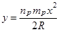
где х - расстояние от рассматриваемой точки до центральной оси здания (сооружения) или его отсека (см. черт. 1 настоящего приложения).
Черт. 1. Схемы вертикальных перемещений темной поверхности при подработке, вызванных кривизной (в) или образованием уступа (б)
3. Разность перемещений Dy двух точек основания здания (сооружения), вызванная кривизной земной поверхности, определяется по формуле
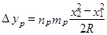
где х1, х2 - расстояние от рассматриваемых точек основания до соответствующей центральной оси здания (сооружения) или его отсека.
4. Разность перемещений Dy двух точек основания здания (сооружения), вызванная равномерным наклоном i земной поверхности, определяется по формуле
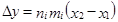
5. Угол наклона в любой точке основания ip, вызванный деформациями земной поверхности, определяется по формуле
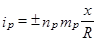
6. Расчетное направление линии уступа следует принимать по простиранию пластов полезных ископаемых.
7. Расчетное местоположение уступа в плане здания (сооружения) следует принимать таким, при котором возникают наибольшие усилия в несущих конструкциях или наибольший крен здания (сооружения).
В тех случаях, когда линии уступов могут быть протрассированы со стороны участка, расположенного рядом с застраиваемой площадкой, расчетное местоположение уступа в плане следует принимать по его возможному расположению.
8. Схема горизонтальных перемещений земной поверхности принимается в виде линейных треугольных эпюр с нулевой точкой, расположенной в центре здания (сооружения). Перемещение любой точки основания Dl относительно соответствующей центральной оси здания (сооружения) или его отсека (черт. 2 настоящего приложения), вызванное горизонтальными деформациями (растяжением-сжатием), следует определять по формуле
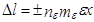
Примечание. В продольной раме каркасного здания или его отсека положение центральной оси следует принимать в середине блока жесткости независимо от расположения блока жесткости относительно оси симметрии.
Черт. 2. Схемы к расчету перемещений точек земной поверхности под воздействием горизонтальных деформаций
а - растяжения; б - сжатия
ТЕРРИТОРИИ С ПРОСАДОЧНЫМИ ГРУНТАМИ
9. При выборе схем деформаций основания в результате локального замачивания грунтов необходимо рассматривать два случая расположения источника замачивания: первый - под серединой здания (сооружения); второй - под торцом здания (сооружения), черт. 3, 4 настоящего приложения.
10. В грунтовых условиях 1 типа по просадочности расчетную схему вертикальных перемещений основания с неустраненной или частично устраненной просадочностью грунтов в деформируемой зоне Нsl,p (см. черт. 3 настоящего приложения) следует принимать с учетом просадки грунтов при совместном воздействии внешней нагрузки, передаваемой фундаментами здания (сооружения), и собственного веса грунтов, а также принимать в виде основания переменной жесткости (с участками неравномерной просадки в зонах замачивания грунтов).
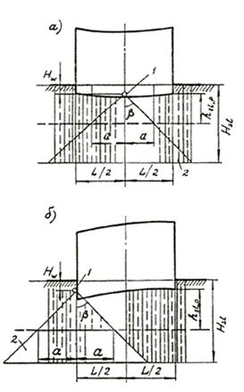
Черт. 3. Схемы вертикальных перемещений основания здания (сооружения) при просадке грунтов от внешней нагрузки
а - замачивание основания под серединой здания (сооружения); б - то же, под торцом; 1 - источник замачивания; 2 - область растекания воды; а - длина участка неравномерной просадки; b - угол растекания воды; Нw - глубина расположения источника замачивания; hsl,p - зона просадки основания от внешней нагрузки; Нsl - просадочная толща
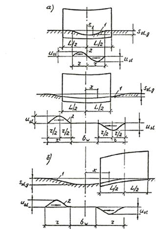
Черт. 4. Схемы вертикальных и горизонтальных перемещений земной поверхности при просадке грунтов от собственного веса
а - при расположении просадочной воронки под серединой здания (сооружения); б - то же, под торцом; 1 - просадочная воронка; 2 - кривая горизонтальных перемещений поверхности грунта
Схемы изменения жесткости основания при местном его замачивании следует принимать по линейному закону от минимального С1 до максимального С значений коэффициентов жесткости (черт. 5 настоящего приложения), в котором значения коэффициентов С1 и С определяются согласно рекомендуемому приложению 11.
Длину до участка основания переменной жесткости следует определять в зависимости от глубины заложения фундамента, глубины расположения источника замачивания, глубины зоны просадки от внешней нагрузки и от величины угла растекания воды.
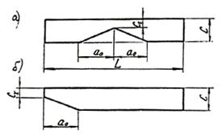
Черт. 5. Схемы изменения жесткости основания в грунтовых условиях 1 типа по просадочности
а - замачивание оснований под серединой здания (сооружения); б - то же, под торцом
11. В случае полного устранения просадочных свойств грунтов в зоне hsl,p под зданием (сооружением) расчетную схему деформации его основания в грунтовых условиях I типа по просадочности следует принимать как для обычных непросадочных грунтов.
12. В грунтовых условиях II типа по просадочности необходимо учитывать: просадку грунтов в верхней зоне основания hsl,p от внешней нагрузки; просадку от собственного веса грунтов в нижней зоне основания hsl,g, горизонтальные деформации земной поверхности.
13. Вертикальные перемещения земной поверхности в грунтовых условиях II типа по просадочности (при просадке грунтов от собственного веса в нижней зоне основания hsl,g просадочной толщи Hsl следует принимать при bw ³ Нsl в виде просадочной воронки (см. черт. 4 настоящего приложения) и записывать в виде следующих формул:
при 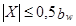 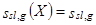
при 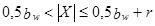
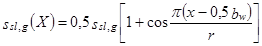
при 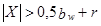 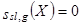
где ssl,g - просадка грунтов от собственного веса, определяемая в соответствии со СНиП 2.02.01-83;
х - координата, отсчитываемая от оси источника замачивания;
bw - ширина горизонтального участка просадки;
r - расчетная длина криволинейного участка просадки грунтов от собственного веса, вычисляемая по формуле
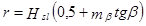
где b - угол растекания воды в стороны от источника замачивания, принимаемый равным для лёссовидных супесей и лёссов 35°, а для лессовидных суглинков 50°.
Коэффициенты mb принимают:
для однородных лессовых толщ mb = 1;
для двухслойных, у которых коэффициент фильтрации верхнего слоя меньше нижнего kf1 < kf2, mb = 0,7; при kf1 > kf2 mb = 1,4;
для трехслойного основания при kf1 < kf2 и kf2 > kf3, mb = 1,7;
для многослойного основания при kf1 < kf2, kf2 < kf3, kf3 < kf4, mb = 2;
При замачивании на площади шириной bw < Нsl просадку грунта следует определять по формулам (6) настоящего приложения, где вместо величины полной просадки грунта ssl,g подставляется величина возможной просадки грунта ssl,g, вычисляемая по формуле
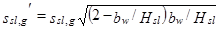
14. Значение горизонтального перемещения земной поверхности (см. черт. 4 настоящего приложения), вызванного просадкой грунтов от собственного веса в различных точках просадочной воронки, следует определять по формулам:
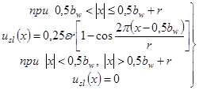
где e - значение относительных горизонтальных деформаций земной поверхности, равное
e = 0,66 (2ssl,g/r - 0,005). (10)
15. Наклон земной поверхности в различных точках просадочной воронки следует определять по формулам:
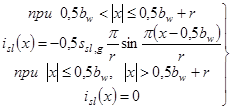
ПРИЛОЖЕНИЕ 11
Рекомендуемое
ОПРЕДЕЛЕНИЕ КОЭФФИЦИЕНТОВ ЖЕСТКОСТИ ОСНОВАНИЙ ЗДАНИЙ И СООРУЖЕНИЙ
ОСНОВАНИЯ, СЛОЖЕННЫЕ НЕПРОСАДОЧНЫМИ ГРУНТАМИ, ПРИ СЖАТИИ
1. Коэффициенты жесткости, используемые для оценки напряженно-деформированного состояния конструкций зданий и сооружений в предположении линейной деформируемости грунтов, определяются исходя из осадок основания от действия среднего давления под подошвой фундамента.
Расчет осадок основания следует, как правило, выполнять, применяя расчетную схему основания в виде линейно-деформируемого полупространства с условным ограничением глубины сжимаемой толщи или линейно-деформируемого слоя в соответствии со СНиП 2.02.01-83 и указаниями настоящего приложения.
За расчетное состояние грунтов по влажности принимается установившееся значение влажности, равное природной влажности w, если w ³ wp, и влажность на границе раскатывания wp, если w < wp.
2. При определении коэффициентов жесткости основания следует учитывать форму и размеры подошвы фундамента, неоднородность геологического строения основания и, в необходимых случаях, распределительные свойства грунтов.
Форму и размеры подошвы фундамента следует учитывать при определении вертикальных нормальных напряжений по глубине основания согласно требованиям обязательного приложения 2 СНиП 2.02.01-83.
Неоднородность геологического строения основания следует учитывать определением осадок в точках под подошвой фундамента на расчетных вертикалях геологического разреза, выбираемых в зависимости от характера напластований, наличия линз, включений и т. п. (черт. 1 настоящего приложения). По выбранным вертикалям следует назначать расчетные слои в пределах сжимаемой толщи основания.
Распределительные свойства грунтов основания следует учитывать определением переменного коэффициента жесткости исходя из раздельного учета упругих и остаточных осадок.
3. Остаточные осадки основания следует определять в случаях, когда
p > szg, (1)
где р - среднее давление (нормальное контактное напряжение) под подошвой фундамента, не превышающее расчетного сопротивления грунта основания;
szg - вертикальное нормальное напряжение на уровне подошвы фундамента от собственного веса вышележащих грунтов.
Если p £ szg, остаточные осадки не определяют.
4. При определении остаточных осадок основания по всем расчетным вертикалям следует принимать такое же распределение дополнительных напряжений по глубине, как и для вертикали, проходящей через центр подошвы фундамента.
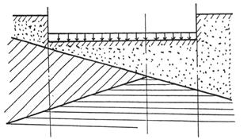
Черт. 1. Геологический разрез неоднородного основания
Остаточная осадка spl с использованием расчетной схемы основания в виде линейно-деформируемого полупространства определяется методом послойного суммирования по формуле
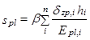
где b - безразмерный коэффициент, равный 0,8;
szp,i - среднее значение дополнительного вертикального нормального напряжения в i-ом слое грунта по вертикали, проходящей через центр подошвы фундамента;
hi - толщина i-го слоя грунта;
Epl,i - модуль остаточных деформаций i-го слоя грунта, определяемый в соответствии с рекомендуемым приложением 12;
n - число слоев, на которое разбита сжимаемая толща основания.
При этом распределение вертикальных нормальных напряжений по глубине основания следует принимать в соответствии с обязательным приложением 2 СНиП 2.02.01-83.
5. Упругие осадки основания по расчетным вертикалям следует определять с учетом неравномерного распределения вертикальных нормальных напряжений по горизонтальным сечениям сжимаемой толщи основания. Значения этих напряжений на глубине по вертикали, проходящей через произвольную точку в пределах или за пределами рассматриваемого фундамента, следует определять методом угловых точек (см. обязательное приложение 2 СНиП 2.02.01-83) или с использованием формул, по которым производится распределение напряжений в линейно-деформируемом полупространстве от действия нагрузки на поверхность основания.
Упругую осадку основания sel по расчетной вертикали следует определять по формуле
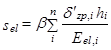
где szp,i - среднее значение дополнительного вертикального нормального напряжения в i-ом слое грунта по рассматриваемой вертикали;
Eel,i - модуль упругих деформаций i-го слоя грунта, определяемый в соответствии с рекомендуемым приложением 12.
6. При использовании расчетной схемы основания в виде линейно-деформируемого слоя остаточные и упругие осадки основания допускается определять по формулам (2) и (3) настоящего приложения, в которых глубина сжимаемой толщи принимается равной толщине линейно-деформируемого слоя.
7. Коэффициент жесткости основания С по рассматриваемой вертикали определяется по формуле
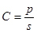
где s - полная осадка основания по рассматриваемой вертикали, определяемая по формуле
s = spl + sel. (5)
Промежуточные значения коэффициента жесткости на участках поверхности основания между расчетными вертикалями следует определять интерполяцией.
8. При определении коэффициентов жесткости основания допускается не учитывать распределительные свойства грунта, если соблюдается условие
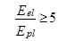
В этом случае при определении упругих осадок основания по формуле (3) настоящего приложения значения напряжений szp,i по всем рассматриваемым вертикалям в пределах подошвы фундамента следует принимать одинаковыми и равными напряжениям szp,i, по вертикали, проходящей через центр подошвы фундамента. Остаточные осадки следует определять по формуле (2) настоящего приложения.
9. В случае, когда значения нормальных контактных напряжений на отдельных участках подошвы фундамента, полученные при расчете конструкции на линейно-деформируемом основании с использованием величин коэффициентов жесткости по формуле (4) настоящего приложения, не удовлетворяют условиям (3) п. 4.27, необходимо учитывать нелинейную зависимость осадки основания от давления (нормального контактного напряжения), черт. 2 настоящего приложения.
При возрастании давления на поверхность основания следует принимать для расчетов гиперболическую зависимость между осадкой и давлением, при уменьшении давления - линейную зависимость. Допускается применять и другие виды зависимостей осадка (давление), которые проверены экспериментальным путем и опытом проектирования и эксплуатации зданий и сооружений.
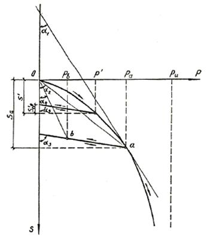
Черт. 2. Расчетная зависимость между осадкой и давлением (нормальным контактным напряжением) для нелинейно-деформируемого основания
10. Осадку s поверхности основания при возрастающем давлении р следует определять по формуле
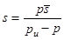
где - приведенная осадка, определяемая по формуле
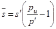
здесь s¢ - полная осадка основания по рассматриваемой вертикали, определяемая по формуле (5) настоящего приложения при давлении p;
р¢ - среднее давление под подошвой фундамента, не превышающее расчетного сопротивления грунта основания R, определяемого в соответствии со СНиП 2.02.01-83;
pu - предельное сопротивление грунта основания, определяемое в соответствии со СНиП 2.02.01-83.
Осадку s поверхности основания при уменьшении давления (разгрузке) следует определять по формуле
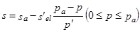
где sa - осадка при давлении рa, с которого началась разгрузка (точка а на кривой нагружения, см. черт. 2 настоящего приложения);
sel - упругая осадка основания при давлении р, определяемая по формуле (3) настоящего приложения.
11. Коэффициенты жесткости нелинейно-деформируемого основания следует определять по формулам:
касательный (действительный) Сk при нагружении
Ck = tga1; (10)
секущий (средний) Сc при нагружении
 Cc = tga2; (11)
Cc = tga2; (11)
касательный Cpk при разгрузке
Cpk = tga3; (12)
секущий Cpc при разгрузке
Сpc = tga4. (13)
Значения касательных коэффициентов жесткости следует использовать при расчетах конструкций на нелинейно-деформируемом основании при ступенчатом нагружении (шаговый метод), значения секущих коэффициентов жесткости - при фиксированном значении нагрузки (метод секущих или метод последовательного уточнения жесткостей).
12. При зависимостях между осадкой и давлением по формулам (7) и (9) настоящего приложения значения коэффициентов жесткости следует определять по формулам:
касательный (действительный) Сk при нагружении
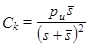
секущий (средний) Сc при нагружении
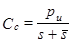
касательный Сpk при разгрузке
; (16)
секущий Сpc при разгрузке
где рu, s, , p, sel, sa, pa - те же, что в формулах (7) - (9) настоящего приложения;
а - точка на кривой нагружения, от которой началась разгрузка (черт. 2 настоящего приложения);
b - точка на прямой разгрузки, по которой определяется секущий коэффициент жесткости (см. черт. 2 настоящего приложения);
pb - давление, при котором определяется секущий коэффициент жесткости при разгрузке.
ОСНОВАНИЯ, СЛОЖЕННЫЕ ПРОСАДОЧНЫМИ ГРУНТАМИ, ПРИ СЖАТИИ
13. Коэффициенты жесткости основания, сложенного просадочными грунтами, следует определять без учета и с учетом просадочных свойств грунтов исходя из двух состояний просадочных грунтов по влажности:
без учета просадочных свойств грунтов - исходя из деформационных характеристик грунтов при установившейся влажности, принимаемой равной природной влажности w, если w ³ wp, и влажности на границе раскатывания wp, если w < wp.
с учетом просадочных свойств грунтов при возможном их замачивании - исходя из деформационных характеристик грунтов в водонасыщенном состоянии (степени влажности sr ³ 0,8).
Коэффициенты жесткости основания без учета просадочных свойств грунтов следует определять в соответствии с указаниями пп. 1-12 настоящего приложения.
Коэффициенты жесткости основания с учетом просадочных грунтов следует определять в зависимости от типа грунтовых условий по просадочности согласно указаниям пп. 14-16.
При определении коэффициентов жесткости оснований. сложенных просадочными грунтами, допускается не учитывать распределительные свойства грунтов в соответствии с указаниями п. 8.
14. Коэффициент жесткости линейно-деформируемого основания с учетом просадочных свойств грунтов в грунтовых условиях I типа С1 следует определять по формуле
где С - коэффициент жесткости основания без учета просадочных свойств грунтов, определяемый по формуле (4) настоящего приложения;
s - осадка основания без учета просадочных свойств грунтов с деформационными характеристиками, соответствующими природной или установившейся влажности;
sd - дополнительная осадка при замачивании непросадочных слоев грунта, находящихся в пределах сжимаемой толщи основания;
ssl - просадка грунтов основания от внешней нагрузки и от собственного веса грунта в пределах сжимаемой толщи основания.
15. Коэффициент жесткости линейно-деформируемого основания с учетом просадочных свойств грунтов в грунтовых условиях II типа СII следует определять по формуле
где С, s, sd - те же, что в формуле (18) настоящего приложения;
ssl,p - просадка грунтов основания от внешней нагрузки в пределах сжимаемой толщи основания.
Примечание. Не допускается пользоваться формулой (19) при вычислении среднего коэффициента жесткости в грунтовых условиях II типа, если расчетные схемы основания здания отличаются от указанных в п. 13 рекомендуемого приложения 10.
16. В случае, когда по результатам расчета здания (сооружения) во взаимодействии с основанием с использованием значений коэффициентов жесткости С, СI или СII не удовлетворяются условия п.4.19, необходимо определять коэффициенты жесткости с учетом нелинейности деформирования основания.
Нелинейные коэффициенты жесткости без учета просадочных свойств грунтов следует определять по формулам (14)-(17) настоящего приложения.
Нелинейные коэффициенты жесткости с учетом просадочных свойств грунтов следует определять по формулам (7)-(17) настоящего приложения, в которых:
предельное сопротивление рu грунта основания вычисляется с использованием расчетных значений прочностных характеристик грунта в водонасыщенном состоянии;
полная осадка основания s определяется по формулам:
для грунтов I типа по просадочности
s¢ = s + sd + ssl; (20)
для грунтов II типа по просадочности
s¢ = s + sd + ssl,p, (21)
где s, sd, ssl,p, ssl - те же, что в формулах (18) и (19) настоящего приложения;
среднее давление под подошвой фундамента p¢ не должно превышать расчетного сопротивления грунта основания, определяемого с использованием расчетных значений прочностных характеристик грунта в водонасыщенном состоянии.
ОСНОВАНИЯ, ДЛИТЕЛЬНО ДЕФОРМИРУЕМЫЕ ПРИ СЖАТИИ
17. При определении коэффициентов жесткости оснований, характеризуемых невысокими скоростями протекания осадок во времени (глинистые или водонасыщенные грунты), допускается учитывать зависимость величины коэффициента жесткости от времени.
Коэффициент жесткости основания Сt для момента времени t следует определять по формуле
, (22)
где p - среднее давление под подошвой фундамента;
st - осадка основания на рассматриваемой вертикали в момент времени t от действия давления р, определяемая на основе имеющихся методов расчета осадок во времени.
18. Для предварительных расчетов по оценке влияния длительного деформирования грунтов на напряженно-деформированное состояние конструкций зданий и сооружений, подвергающихся воздействиям от подработки, коэффициент жесткости Сt для момента времени t допускается определять по формуле
 , (23)
, (23)
где С - коэффициент жесткости линейно-деформируемого основания, определяемый по формуле (4) настоящего приложения;
nt - функция, характеризующая длительность деформирования основания, значения которой принимаются в зависимости от величины коэффициента сжимаемости а грунтов по следующей таблице:
|
Сжимаемость грунта а, 1/МПа (см2/кгс) |
Функция nt для определения Сt при длительности приложения нагрузки в годах |
||||||
|
0,5 |
1 |
2 |
3 |
5 |
7 |
10 |
|
|
Сильно сжимаемый а » 1,0 (0,1) |
0,71 |
0,92 |
0,99 |
1,00 |
1,00 |
1,00 |
1,00 |
|
Среднесжимаемый а » 0,1 (0,01) |
0,40 |
0,63 |
0,86 |
0,95 |
0,99 |
1,00 |
1,00 |
|
Малосжимаемый а » 0,01 (0,001) |
0,22 |
0,40 |
0,63 |
0,78 |
0,92 |
0,97 |
1,00 |
В случае если имеются данные наблюдений за осадками зданий и сооружений во времени, значения можно определять по эмпирическим формулам, составленным по данным этих наблюдений. Полученные значения можно использовать при проектировании зданий и сооружений, возводимых в аналогичных условиях.
КОЭФФИЦИЕНТЫ ЖЕСТКОСТИ ОСНОВАНИЯ ПРИ СДВИГЕ
19. Коэффициенты жесткости D линейно деформируемого основания при сдвиге следует определять исходя из горизонтальных перемещений u поверхности основания от действия среднего касательного напряжения t под подошвой фундамента. Горизонтальные перемещения поверхности основания следует, как правило, определять методами, учитывающими ограниченную глубину зоны горизонтальных перемещений грунта.
Коэффициент жесткости D при сдвиге следует определять по формуле
. (24)
20. Коэффициенты жесткости нелинейно деформируемого основания при сдвиге следует определять исходя из гиперболической зависимости между горизонтальным перемещением и касательным контактным напряжением при его увеличении; при уменьшении напряжения принимается линейная зависимость. График зависимости между горизонтальным перемещением u и касательным напряжением t подобен графику, представленному на черт. 2 настоящего приложения, где р и s следует заменить на t и u.
Горизонтальное перемещение u поверхности основания при возрастающем касательном напряжении t следует определять по формуле
где
 - приведенное
горизонтальное перемещение, определяемое по формуле
- приведенное
горизонтальное перемещение, определяемое по формуле
 , (26)
, (26)
здесь u¢ - горизонтальное перемещение поверхности основания по рассматриваемой вертикали при действии касательного напряжения t;
tu - предельное сопротивление грунта основания сдвигу по подошве фундамента, определяемое в соответствии с требованиями СНиП 2.02.01-83;
t¢ - среднее касательное напряжение по подошве фундамента, которое должно удовлетворять условию
. (27)
Горизонтальное перемещение u поверхности основания при уменьшении касательного напряжения t (разгрузке) следует определять по формуле
где ua - горизонтальное перемещение при касательном напряжении ta;
u¢el - упругое горизонтальное перемещение поверхности основания при касательном напряжении t¢, определяемое по формуле
здесь s¢el, s¢ - те же, что в формулах (8) и (9) настоящего приложения.
21. При зависимостях между горизонтальным перемещением и касательным напряжением по формулам (25) и (28) настоящего приложения, значения коэффициентов жесткости при сдвиге следует определять по формулам:
касательный (действительный) Dk при нагружении
; (30)
секущий (средний) Dc при нагружении
; (31)
касательный Dpk при разгрузке
; (32)
секущий Dpc при разгрузке
, (33)
где tu, u, , t¢, ta - те же, что в формулах (25)-(29) настоящего приложения;
а - точка на кривой нагружения, от которой началась разгрузка;
в - точка на прямой разгрузки, для которой определяется секущий коэффициент жесткости;
tв - касательное напряжение, при котором определяется секущий коэффициент жесткости при разгрузке.
КОЭФФИЦИЕНТЫ ЖЕСТКОСТИ ОСНОВАНИЯ ПРИ СЖАТИИ В ЗОНЕ РАСТЯЖЕНИЯ ЗЕМНОЙ ПОВЕРХНОСТИ ОТ ПОДРАБОТКИ
22. При определении коэффициентов жесткости основания в зоне растяжения земной поверхности от подработки, характеризуемой значением (ex + ey) > 0, допускается учитывать снижение значений коэффициентов жесткости в зависимости от величин относительных горизонтальных деформаций растяжения ex в направлении простирания пластов и ey - в направлении в крест простирания пластов. В этом случае распределительные свойства грунтов основания не следует учитывать.
Коэффициент жесткости основания Сe в зоне растяжения земной поверхности от подработки следует определять по формуле
, (34)
где р - среднее давление под подошвой фундамента;
se - осадка основания по рассматриваемой вертикали от давления р, определяемая на основе имеющихся методов расчета осадок с учетом значений модулей полных деформаций слоев грунта Еe, определяемых в соответствии с п. 23 настоящего приложения.
23. Модуль полной деформации i-го слоя Еei следует определять по формуле
где Ei - модуль полной деформации i-го слоя, определяемый компрессионными или штамповыми испытаниями до начала подработки;
n - коэффициент Пуассона, принимаемый для песков и супеси 0,3; суглинков - 0,35; глин - 0,42;
szp,i - среднее значение дополнительного вертикального нормального напряжения в i-том слое грунта;
ex, ey - те же, что в п. 22 настоящего приложения.
При этом необходимо соблюдать условие:
если вычисленное по формуле (35) настоящего приложения значение
Еi < bЕi, (36)
то принимается
Еei = bЕi, но не менее 0,5 Еi, (37)
где
. (38)
Примечание. В зоне сжатия земной поверхности от подработки, характеризуемой значением (ex + ey) < 0, модули полной деформации слоев грунта Ee принимают равными Еi.
ПРИЛОЖЕНИЕ
12
Рекомендуемое
ОПРЕДЕЛЕНИЕ МОДУЛЕЙ ОСТАТОЧНЫХ И УПРУГИХ ДЕФОРМАЦИЙ ГРУНТА
1. Для определения модуля остаточных Epl и упругих Eel деформаций грунта по результатам полевых испытаний грунта штампами или лабораторных компрессионных испытаний образцов грунта следует при испытаниях получать кривую разгрузки. При этом допускается производить разгрузку после достижения стабилизации осадки от последней ступени нагрузки. Разгрузку следует производить теми же ступенями, которыми производилась нагрузка, с достижением требуемой стабилизации деформации.
2. В случае штамповых испытаний модули деформации Epl и Eel следует определять по графику зависимости осадки штампа от нагрузки на него (см. чертеж настоящего приложения) по формулам:
; (1)
, (2)
где w - коэффициент формы подошвы штампа, равный 0,88 для квадрата и 0,89 - для круга;
А - площадь подошвы штампа;
v - коэффициент Пуассона грунта [см. формулу (35) рекомендуемого приложения 11].
3. В случае компрессионных испытаний модуль остаточных деформаций грунта Epl следует определять по формуле
, (3)
где Е - модуль полной деформации, определяемый с учетом коэффициента перехода от компрессионного к штамповому модулю полных деформаций;
Eel - модуль упругой деформации, определяемый по кривой разгрузки компрессионной диаграммы сжатия на рассматриваемом диапазоне изменения давления.
График зависимости осадки от давления при испытаниях грунта штампом
1 - кривая нагружения; 2 - кривая разгрузки
4. Если при полевых испытаниях грунтов штампами или при компрессионных испытаниях образцов грунтов кривые разгрузки не определялись, то следует принимать значение
Eel = 5Epl. (4)